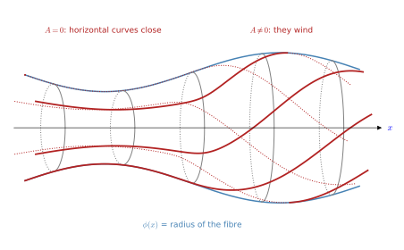
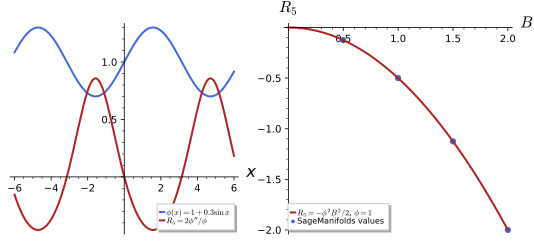
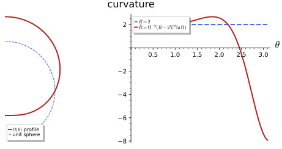
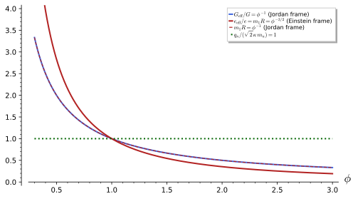

The Kaluza-Klein reduction
In 1921 Kaluza (Kaluza 1921) observed that general relativity in five dimensions already contains electromagnetism. If the fifth dimension is a circle and nothing depends on the position around it, the fifteen components of the five-dimensional metric split into a four-dimensional metric, a vector field and a scalar, and the five-dimensional Einstein-Hilbert action becomes four-dimensional gravity coupled to Maxwell’s theory and to a scalar field. The gauge field is a part of the geometry rather than an additional ingredient, and the gauge symmetry is a coordinate change along the circle. Klein added in 1926 (Klein 1926) that the circle must be very small, which explains why it is not seen, and that the momentum around it is the electric charge. This idea, extended to higher-dimensional internal spaces and to supergravity, runs through the rest of the tutorial.
The chapter carries out the reduction in full, in three sections. The first sets up the Kaluza-Klein ansatz: the cylinder condition, the parametrisation of the metric by a four-dimensional metric g_{\mu\nu}, a vector A_\mu and a scalar \phi, and the inverse and the determinant of the five-dimensional metric. The second computes the Christoffel symbols, the Ricci tensor and the curvature scalar of the ansatz, the latter being \hat R = R + \tfrac14\phi^2F_{\mu\nu}F^{\mu\nu} - \tfrac{2}{\phi}\Box\phi, and integrates the action over the circle. The third removes the factor \phi in front of the curvature by a Weyl rescaling of the metric, the passage from the Jordan frame to the Einstein frame, and identifies the scalar as a dilaton whose value sets the strength of the gauge coupling. The machinery is the Riemannian geometry of Metrics and Connections and curvature, the Einstein-Hilbert action of General relativity and the abelian gauge theory of Gauge theories, all in the signature (+, -, -, -) of Prerequisites and conventions, extended to (+, -, -, -, -) in five dimensions. Every statement is followed by three examples and three exercises with hidden solutions; the curvature formulas are polynomial identities in the values and derivatives of the fields at a point, and the explicit metrics are computed with SageManifolds.
Five-dimensional gravity and the Kaluza-Klein ansatz
Kaluza’s idea is to take the Einstein-Hilbert action of The Einstein-Hilbert action in five dimensions and to ask what a four-dimensional observer sees when the fifth dimension is a small circle. Everything that follows is the geometry of Metrics applied to one 5 \times 5 metric. This section sets up that metric, the Kaluza-Klein ansatz: the cylinder condition, the identification of its components with a metric, a vector and a scalar on spacetime, its inverse and its determinant. Our sources are Overduin and Wesson (1997, sec. 3) and Duff (1994, secs. 1–2); the conventions are those of Prerequisites and conventions, signature (+, -, -, -, -) with the fifth coordinate y: the circle direction is spacelike, so the internal block of the metric carries a minus sign (Coordinates, indices and signature).
The cylinder condition
A metric on M_4 \times S^1 may depend on all five coordinates. Kaluza’s first assumption removes the dependence on the circle coordinate, so that the metric is in effect a collection of fields on four-dimensional spacetime. The assumption has a geometric meaning, a symmetry of the metric, and a physical one, which Klein supplied.
Definition 1 (Cylinder condition) A five-dimensional metric \hat g_{AB}(x, y) on M_4 \times S^1 satisfies the cylinder condition if none of its components depends on the circle coordinate, \partial_y\hat g_{AB} = 0. The vector field \partial_y is then a Killing vector (Definition 77 of Differential geometry), and the metric is determined by its components at a single value of y.
Veriphy. Pending.
Lean. Pending.
Sage. Pending.
Kaluza gave no reason for the condition. The first example records how Klein’s periodic circle turns it from an assumption into an approximation that becomes exact for small radii.
Example 1 (Kaluza’s assumption) Kaluza imposed the condition by fiat, “for no good reason” as Duff (1994, 3) puts it; Klein explained it: on a circle of radius R every field is a Fourier series \sum_nf_n(x)e^{iny/R}, the mode n has mass |n|/R (The Kaluza-Klein tower), and for small R only the y-independent mode n = 0 is light.
A two-dimensional version of the condition can be drawn. Its metric has one spacetime coordinate and one circle, and it is the picture of the ansatz used throughout the chapter.
Example 2 (The two-dimensional toy) On the cylinder with coordinates (x, y), y \sim y + 2\pi, the Riemannian metric dx^2 + \phi(x)^2(dy + A(x)dx)^2 satisfies the condition; it is the surface of revolution of radius \phi(x) in Figure 1, and its curvature is R = -2\phi''/\phi whatever A is (Exercise 2). The toy is Riemannian so that it embeds as a surface; in the five-dimensional ansatz below the (x, y) block is -dx^2 - \phi^2dy^2 for flat g, its negative, and the curvature changes sign (Example 31).
The condition also has a precise meaning in terms of the Fourier modes. Setting the massive modes to zero is consistent with the field equations, and this is what makes the four-dimensional theory a truncation rather than an approximation.
Example 3 (The zero-mode truncation) Keeping only n = 0 is a consistent truncation: the product of y-independent fields is y-independent, so the zero modes never source the massive ones (Duff et al. 2025, 14). The cylinder condition is thus the exact statement that the massive Kaluza-Klein modes have been set to zero (Definition 8 of Gauge symmetry and the Kaluza-Klein tower).

figures/kk_circle.sage.
Interactive figure (drag to rotate or zoom); the static version is above.
The first exercise connects the condition with the Killing equation of Flows and Killing vectors. It shows that the condition is the coordinate form of a symmetry.
Exercise 1 (The Killing vector of the circle) Show that \partial_y is a Killing vector of \hat g if and only if \partial_y\hat g_{AB} = 0 in the coordinates (x^\mu, y), and that its flow y \mapsto y + c maps each circle of constant x into itself.
For a coordinate vector field the Lie derivative of the metric is the partial derivative of its components: (\mathcal{L}_{\partial_y}\hat g)_{AB} = \partial_y\hat g_{AB} + \hat g_{CB}\partial_A\delta^C_y + \hat g_{AC}\partial_B\delta^C_y = \partial_y\hat g_{AB}, since the components of \partial_y are constant (Definition 76 of Differential geometry). The Killing equation \mathcal{L}_{\partial_y}\hat g = 0 is therefore exactly the cylinder condition. The flow of \partial_y is (x, y) \mapsto (x, y + c), which keeps x fixed and rotates each circle rigidly.
The two-dimensional toy of Example 2 hides its gauge field in a coordinate choice. The next exercise removes it and computes the curvature, the statement drawn in Figure 1.
Exercise 2 (The two-dimensional ansatz) Show that the Riemannian toy dx^2 + \phi(x)^2(dy + A(x)dx)^2 is isometric to dx^2 + \phi(x)^2dy'^2 and compute its curvature.
Put y' = y + \int^xA: then dy' = dy + A\,dx and the metric is dx^2 + \phi^2dy'^2, the surface of revolution with the induced metric of Definition 46 of Differential geometry. Its Gaussian curvature is K = -\phi''/\phi and R = 2K = -2\phi''/\phi (Example 274 of Differential geometry for the sign conventions), as SageManifolds confirms in figures/kk_circle.sage for the original form with A present. In two dimensions A is pure gauge; in five it is not, because F_{\mu\nu} need not vanish. The dilaton example of Example 31 has \hat R = +2\phi''/\phi: there the relevant block -dx^2 - \phi^2dy^2 is the negative of the toy metric, and R changes sign under g \to -g (Coordinates, indices and signature).
The round sphere has a rotation symmetry, so it satisfies the cylinder condition in suitable coordinates. The second exercise uses the two-dimensional curvature formula of Example 2 on it.
Exercise 3 (The sphere as a toy) Write the round metric d\theta^2 + \sin^2\theta\,d\varphi^2 in the form of the toy of Example 2, identify \phi and A, and compute its curvature from R = -2\phi''/\phi. Why does the toy description break down at the poles?
With x = \theta and y = \varphi the metric is dx^2 + \phi(x)^2dy^2 with \phi = \sin\theta and A = 0, and it satisfies the cylinder condition because no component depends on \varphi. Then \phi'' = -\sin\theta and R = - 2\phi''/\phi = 2, the curvature of the unit sphere (Example 274 of Differential geometry). At the poles \phi = 0: the circle shrinks to a point, the fibration of the surface by circles is singular there, and the ansatz with \phi > 0 applies only to the open cylinder 0 < \theta < \pi.
The third exercise makes the consistency of the zero-mode truncation concrete. It computes Fourier coefficients of products of modes, which is how interactions between modes arise.
Exercise 4 (Products of modes) Using the Fourier coefficients of Fourier series, show with Sage that a product of y-independent functions has only a zero mode, that the product of the modes e^{iy} and e^{-iy} has a zero mode, and that e^{iy}e^{iy} has only the mode n = 2. What does this say about truncating to the zero modes?
The n-th coefficient of e^{iay}e^{iby} is \frac{1}{2\pi}\int_0^{2\pi}e^{i(a + b - n)y}dy = \delta_{n, a + b}: momentum around the circle adds. Zero modes therefore generate only zero modes, so the equations for the massive modes are solved by setting them to zero, while massive modes in pairs (n, -n) do source the zero modes:
y = var("y")
def coeff(f, n):
return integrate(f * exp(-I * n * y), y, 0, 2 * pi) / (2 * pi)
f0 = 3; g0 = 5 # two y-independent fields
print("[PASS] the product of two zero modes has only the n = 0 coefficient:",
bool(coeff(f0 * g0, 0) == 15) and all(bool(coeff(f0 * g0, n) == 0) for n in (1, 2, -1)))
p = exp(I * y) * exp(-I * y)
print("coefficients of e^{iy} e^{-iy} for n = -2..2:", [coeff(p, n) for n in range(-2, 3)])
print("[PASS] the modes n = 1 and n = -1 together source the zero mode:", bool(coeff(p, 0) == 1))
q = exp(I * y) * exp(I * y)
print("[PASS] e^{iy} e^{iy} has only the n = 2 coefficient (momentum is conserved):",
bool(coeff(q, 2) == 1) and all(bool(coeff(q, n) == 0) for n in (0, 1, -2)))Output:
[PASS] the product of two zero modes has only the n = 0 coefficient: True
coefficients of e^{iy} e^{-iy} for n = -2..2: [0, 0, 1, 0, 0]
[PASS] the modes n = 1 and n = -1 together source the zero mode: True
[PASS] e^{iy} e^{iy} has only the n = 2 coefficient (momentum is conserved): TrueThe truncation to n = 0 is consistent; the opposite truncation, dropping the zero modes, is not.
The ansatz
A metric satisfying the cylinder condition has fifteen components that are functions on spacetime. The ansatz below groups them into the fields a four-dimensional observer measures, in a way that makes their transformation laws transparent; the essential step is to complete the square in dy.
Definition 2 (Kaluza-Klein ansatz) The Kaluza-Klein ansatz is the five-dimensional metric d\hat s^2 = g_{\mu\nu}(x)\,dx^\mu dx^\nu - \phi(x)^2\left(dy + A_\mu(x)\,dx^\mu\right)^2 , \tag{1} with components \hat g_{\mu\nu} = g_{\mu\nu} - \phi^2A_\mu A_\nu, \qquad \hat g_{\mu y} = -\phi^2A_\mu, \qquad \hat g_{yy} = -\phi^2 , \tag{2} all independent of y. It is the most general metric satisfying the cylinder condition, written so that its fifteen components are a symmetric tensor g_{\mu\nu}, a vector A_\mu and a scalar \phi > 0 on M_4 (Overduin and Wesson 1997, eq. 5, with \kappa = 1). The minus sign makes the circle direction spacelike, so that \hat g has signature (+, -, -, -, -) when g has signature (+, -, -, -), and the circumference of the circle over x is 2\pi\phi(x). The gauge coupling is restored in The Kaluza-Klein tower.
Veriphy. Pending.
Lean. Pending.
Sage. Pending.
The ansatz is easiest to manipulate as a block matrix. In this form its determinant and its inverse follow from the block formulas of linear algebra.
Example 4 (In block form) \hat g = \begin{pmatrix} g - \phi^2AA^T & -\phi^2A \\ -\phi^2A^T & -\phi^2 \end{pmatrix}: the 4 \times 4 block, the 4 \times 1 column and the 1 \times 1 corner. The index set is the disjoint union of the four spacetime indices and the single circle index y (Proposition 2).
Veriphy. Pending.
Lean. The index set is \text{Fin}\,4 \oplus \text{Unit}, the summand \text{Unit} being the circle direction, and \hat g is built with mathlib’s Matrix.fromBlocks (KaluzaKlein.AbelianKK.Gauge.det_ansatz, Proposition 2).
Sage. Pending.
Switching off the vector leaves a metric in which only the size of the circle varies. It is the simplest non-trivial case and already contains the scalar sector of the theory.
Example 5 (A_\mu = 0) d\hat s^2 = g_{\mu\nu}dx^\mu dx^\nu - \phi^2dy^2, a warped product with the circle radius \phi(x) varying over spacetime; its reduction is the Brans-Dicke theory with \omega = 0 of Example 52.
Switching off all variation gives the vacuum of the theory. Every later perturbative statement, such as the masses of the Kaluza-Klein modes, refers to this background.
Example 6 (The ground state) g_{\mu\nu} = \eta_{\mu\nu}, A_\mu = 0, \phi = R constant: flat M_4 \times S^1 with a circle of radius R, the vacuum around which the Fourier expansion of The Kaluza-Klein tower is made (Duff 1994, eq. 12).
The first exercise reads the components off the line element. It is the step from Equation 1 to Equation 2, done by expanding the square.
Exercise 5 (Reading off the components) Expand Equation 1 and derive Equation 2, remembering that the off-diagonal terms \hat g_{\mu y}dx^\mu dy appear twice in \hat g_{AB}dx^Adx^B.
(dy + A_\mu dx^\mu)^2 = dy^2 + 2A_\mu dx^\mu dy + A_\mu A_\nu dx^\mu dx^\nu, so d\hat s^2 = (g_{\mu\nu} - \phi^2A_\mu A_\nu)dx^\mu dx^\nu - 2\phi^2A_\mu dx^\mu dy - \phi^2dy^2. Comparing with \hat g_{\mu\nu}dx^\mu dx^\nu + 2\hat g_{\mu y}dx^\mu dy + \hat g_{yy}dy^2 gives \hat g_{\mu\nu} = g_{\mu\nu} - \phi^2A_\mu A_\nu, \hat g_{\mu y} = -\phi^2A_\mu and \hat g_{yy} = -\phi^2. Conversely every symmetric \hat g with \hat g_{yy} < 0 is of this form: \phi^2 = -\hat g_{yy}, A_\mu = \hat g_{\mu y}/\hat g_{yy}, g_{\mu\nu} = \hat g_{\mu\nu} + \phi^2A_\mu A_\nu.
The scalar \phi measures the size of the circle. The second exercise makes this precise with the length of a curve, Metrics.
Exercise 6 (The size of the circle) Compute the proper length of the closed curve y \mapsto (x_0, y), 0 \leq y \leq 2\pi, in the metric Equation 1. Does it depend on A_\mu? Is the curve a geodesic when \phi is not constant?
The tangent vector is \partial_y, with \hat g(\partial_y, \partial_y) = -\phi^2 < 0 (spacelike), so the length is \int_0^{2\pi}\sqrt{|\hat g_{yy}|}\,dy = 2\pi\phi(x_0), independently of A_\mu. The geodesic equation for x^\lambda along the curve is \ddot x^\lambda + \hat\Gamma^\lambda_{yy}\dot y^2 = 0 with \hat\Gamma^\lambda_{yy} = \phi\partial^\lambda\phi (Equation 5), so the circle is a geodesic only where \partial\phi = 0: otherwise a curve along the fibre is pushed towards larger circles (Example 25).
The signature of the ansatz was asserted in the definition. The third exercise proves it by writing the metric as a congruence transformation of a block-diagonal matrix.
Exercise 7 (The signature) Let E be the 5 \times 5 matrix whose rows are the components of the one-forms dx^\mu and e^y = dy + A_\mu dx^\mu. Show that \hat g = E^T\operatorname{diag}(g, -\phi^2)E, and deduce with Sylvester’s law of inertia that \hat g has signature (+, -, -, -, -). Check with a numerical example.
d\hat s^2 = g_{\mu\nu}dx^\mu dx^\nu - \phi^2(e^y)^2 is the statement \hat g = E^T\operatorname{diag}(g, -\phi^2)E, and E is lower triangular with unit diagonal, so \det E = 1. Congruent symmetric matrices have the same numbers of positive and negative eigenvalues, so \hat g has the signature of g plus one minus sign:
gs = [[var("g%d%d" % (min(i, j), max(i, j))) for j in range(4)] for i in range(4)]
A = [var("A%d" % i) for i in range(4)]; phi = var("phi")
g = matrix(SR, gs)
G = matrix(SR, 5, 5)
for i in range(4):
for j in range(4): G[i, j] = g[i, j] - phi^2 * A[i] * A[j]
G[i, 4] = G[4, i] = -phi^2 * A[i]
G[4, 4] = -phi^2
E = identity_matrix(SR, 5)
for i in range(4): E[4, i] = A[i] # e^y = dy + A_mu dx^mu
D = block_diagonal_matrix(g, matrix(SR, [[-phi^2]]))
print("[PASS] the ansatz is E^T diag(g, -phi^2) E with det E = 1:", bool((E.transpose() * D * E - G).simplify_full() == 0) and bool(E.det() == 1))
num = G.subs({gs[i][j]: (1 if i == j == 0 else (-1 if i == j else 0)) for i in range(4) for j in range(4)}).subs(A0=2, A1=-1, A2=3, A3=1/2, phi=3/2)
ev = num.change_ring(RDF).eigenvalues()
print("eigenvalues of the ansatz for g = eta, A = (2, -1, 3, 1/2), phi = 3/2:", [round(e, 4) for e in sorted(ev)])
print("[PASS] one positive and four negative eigenvalues: signature (+,-,-,-,-):", sum(1 for e in ev if e > 0) == 1 and sum(1 for e in ev if e < 0) == 4)Output:
[PASS] the ansatz is E^T diag(g, -phi^2) E with det E = 1: True
eigenvalues of the ansatz for g = eta, A = (2, -1, 3, 1/2), phi = 3/2: [-34.7442, -1.0, -1.0, -0.1178, 0.5495]
[PASS] one positive and four negative eigenvalues: signature (+,-,-,-,-): TrueThe ansatz gives names to the components, but names are justified by transformation laws. The next definition states how the three fields behave under the coordinate changes that preserve the form of the ansatz and do not touch the circle.
Definition 3 (The Kaluza-Klein fields) Under a four-dimensional coordinate change x \mapsto x'(x) at fixed y, which is a five-dimensional coordinate change with \xi^y = 0, the components Equation 2 transform so that g_{\mu\nu} is a tensor (Definition 28 of Differential geometry), A_\mu a covector (Definition 27 of Differential geometry) and \phi a scalar: the Kaluza-Klein fields are a metric, a gauge field and a scalar on spacetime (Duff 1994, eq. 9).
Veriphy. Pending.
Lean. Pending.
Sage. Pending.
The transformation laws follow from the tensor law of the five-dimensional metric. The first example sketches the argument, which Exercise 8 completes.
Example 7 (From the five-dimensional tensor law) \hat g'_{AB} = \frac{\partial x^C}{\partial x'^A}\frac{\partial x^D}{\partial x'^B}\hat g_{CD} with \partial y/\partial x'^\mu = 0 gives \hat g'_{yy} = \hat g_{yy}, so \phi is a scalar; \hat g'_{\mu y} = \frac{\partial x^\nu} {\partial x'^\mu}\hat g_{\nu y}, so -\phi^2A_\mu and hence A_\mu is a covector; and then g_{\mu\nu} = \hat g_{\mu\nu} + \phi^2A_\mu A_\nu is a tensor (Exercise 8).
A reparametrisation of fields must not lose information. Counting components confirms that the three fields are exactly as many functions as the metric they replace.
Example 8 (Counting components) 10 + 4 + 1 = 15, the components of a symmetric 5 \times 5 matrix: nothing is lost or added, and the three fields are precisely the massless spin-2, spin-1 and spin-0 zero modes of Definition 8 of Gauge symmetry and the Kaluza-Klein tower; (Duff 1994, 11).
The four-dimensional coordinate changes are not the only ones that preserve the ansatz. The third example looks at the remaining one, which is the subject of the next chapter.
Example 9 (The remaining coordinate freedom) A coordinate change with \xi^y = \epsilon(x) keeps the form Equation 1 but shifts A_\mu by -\partial_\mu\epsilon: this is the gauge transformation of Gauge invariance from the fifth dimension, the reason A_\mu is a gauge field and not just a covector.
The first exercise carries out the derivation of the transformation laws in full. It needs only the block structure of the Jacobian.
Exercise 8 (The tensor law) Verify from \hat g'_{AB} = \frac{\partial x^C}{\partial x'^A}\frac{\partial x^D}{\partial x'^B}\hat g_{CD} with x' = x'(x), y' = y that g_{\mu\nu}, A_\mu, \phi transform as a tensor, a covector and a scalar.
The Jacobian is block diagonal, \partial x^\nu/\partial x'^\mu = J^\nu{}_\mu and \partial y/\partial y' = 1. Then \hat g'_{yy} = \hat g_{yy} gives \phi' = \phi; \hat g'_{\mu y} = J^\nu{}_\mu\hat g_{\nu y} gives -\phi^2A'_\mu = -J^\nu{}_\mu\phi^2A_\nu, the covector law; and \hat g'_{\mu\nu} = J^\rho{}_\mu J^\sigma{}_\nu\hat g_{\rho\sigma} gives g'_{\mu\nu} - \phi^2A'_\mu A'_\nu = J^\rho{}_\mu J^\sigma{}_\nu(g_{\rho\sigma} - \phi^2A_\rho A_\sigma), whose AA terms agree by the covector law, leaving the tensor law for g (Definition 28 of Differential geometry).
A Lorentz boost is a four-dimensional coordinate change, so it must act on the Kaluza-Klein fields as on a metric, a covector and a scalar. The second exercise checks this on a concrete boost.
Exercise 9 (A boost at fixed y) Take g = \eta, a constant A_\mu and a constant \phi, and apply the boost t = \cosh b\,t' + \sinh b\,x', x = \sinh b\,t' + \cosh b\,x', y' = y. Show with Sage that the transformed ansatz has g' = \eta, A' = \Lambda^TA and \phi' = \phi, where \Lambda is the boost matrix.
The Jacobian is \operatorname{diag}(\Lambda, 1) and \Lambda^T\eta\Lambda = \eta, so the AA^T term becomes (\Lambda^TA)(\Lambda^TA)^T and the column -\phi^2A becomes -\phi^2\Lambda^TA:
b = var("b"); A = vector(SR, var("A0 A1 A2 A3")); phi = var("phi")
eta = diagonal_matrix(SR, [1, -1, -1, -1])
L = identity_matrix(SR, 4); L[0, 0] = L[1, 1] = cosh(b); L[0, 1] = L[1, 0] = sinh(b) # dx^mu/dx'^nu for a boost along x
def ansatz(g, A, phi):
G = matrix(SR, 5, 5)
for i in range(4):
for j in range(4): G[i, j] = g[i, j] - phi^2 * A[i] * A[j]
G[i, 4] = G[4, i] = -phi^2 * A[i]
G[4, 4] = -phi^2
return G
J = block_diagonal_matrix(L, matrix(SR, [[1]]))
Gp = (J.transpose() * ansatz(eta, A, phi) * J).simplify_full()
Ap = L.transpose() * A
print("A' =", [a.simplify_full() for a in Ap])
print("[PASS] J^T G(eta, A, phi) J = G(eta, Lambda^T A, phi): g is invariant, A a covector, phi a scalar:",
bool((Gp - ansatz(eta, Ap, phi)).simplify_full() == 0) and bool((L.transpose() * eta * L - eta).simplify_full() == 0))Output:
A' = [A0*cosh(b) + A1*sinh(b), A1*cosh(b) + A0*sinh(b), A2, A3]
[PASS] J^T G(eta, A, phi) J = G(eta, Lambda^T A, phi): g is invariant, A a covector, phi a scalar: TrueAn electric potential A_0 acquires a component A_1 = A_0\sinh b in the moving frame, as a four-vector potential must.
The counting of Example 8 generalises to any number of dimensions. The third exercise does the count and compares the number of degrees of freedom of the massless fields.
Exercise 10 (Counting in d + 1 dimensions) Count the components of a metric in d + 1 dimensions satisfying the cylinder condition and split them into a d-dimensional metric, a vector and a scalar. For d = 4, how many physical polarisations do the massless graviton, photon and scalar carry, and how many does a five-dimensional graviton carry?
\tfrac12(d + 1)(d + 2) = \tfrac12d(d + 1) + d + 1: a symmetric d \times d matrix, a d-vector and a scalar. For d = 4: 15 = 10 + 4 + 1. The physical polarisations of a massless graviton in D dimensions number \tfrac12D(D - 3), 2 for D = 4 and 5 for D = 5; the photon in four dimensions has 2 and the scalar 1, so 2 + 2 + 1 = 5: the five-dimensional graviton is exactly the four-dimensional graviton, photon and scalar, as Example 8 says at the level of components.
Inverse and determinant
Curvature computations need the inverse metric, and the action needs the volume element. Both are simple for the ansatz, because completing the square in Equation 1 has already diagonalised the metric in a frame; the inverse is stated first.
Definition 4 (Inverse of the ansatz metric) The inverse of Equation 2 is \hat g^{\mu\nu} = g^{\mu\nu}, \qquad \hat g^{\mu y} = -A^\mu, \qquad \hat g^{yy} = -\phi^{-2} + A_\mu A^\mu , \tag{3} with A^\mu = g^{\mu\nu}A_\nu (Proposition 1): the inverse of the four-dimensional metric sits in the spacetime block, and the A-dependence moves to the mixed and corner entries.
Veriphy. Pending.
Lean. Pending.
Sage. Pending.
The inverse can be checked by multiplying out. The first example does the three block products, which use nothing but g^{\mu\lambda}g_{\lambda\nu} = \delta^\mu_\nu.
Example 10 (Checking \hat g^{AC}\hat g_{CB} = \delta^A_B) \hat g^{\mu\lambda}\hat g_{\lambda\nu} + \hat g^{\mu y}\hat g_{y\nu} = g^{\mu\lambda}(g_{\lambda\nu} - \phi^2A_\lambda A_\nu) + A^\mu\phi^2A_\nu = \delta^\mu_\nu, \hat g^{\mu\lambda}\hat g_{\lambda y} + \hat g^{\mu y}\hat g_{yy} = -\phi^2A^\mu + \phi^2A^\mu = 0, and \hat g^{y\lambda}\hat g_{\lambda y} + \hat g^{yy}\hat g_{yy} = \phi^2A^\lambda A_\lambda + 1 - \phi^2A_\lambda A^\lambda = 1 (Exercise 11).
At the ground state the inverse is diagonal. The second example shows that its circle entry is what produces the Kaluza-Klein masses.
Example 11 (At the ground state) With A = 0, \hat g^{AB} = \operatorname{diag}(g^{\mu\nu}, -\phi^{-2}), and at \phi = R the circle direction is rescaled by -R^{-2}: on the mode e^{iny} (period 2\pi in y) the operator \hat g^{yy}\partial_y^2 gives -R^{-2}\cdot(-n^2) = (n/R)^2, so \hat g^{AB}\partial_A\partial_B = \Box_4 + (n/R)^2, the origin of the mass |n|/R (The Kaluza-Klein tower).
In the curvature computations of Section 1.2 the inverse of the four-dimensional metric is not computed but treated as a set of new variables. The third example explains why this is enough.
Example 12 (The inverse as free symbols) In the jet computations of Section 1.2 the entries g^{\mu\nu} are independent symbols and Equation 3 is the definition of \hat g^{AB}; the reduction never needs g^{\mu\lambda}g_{\lambda\nu} = \delta^\mu_\nu, a fact the computation itself reveals (Definition 6).
Veriphy. Pending.
Lean. The statements of KaluzaKlein.AbelianKK.Jets take the entries g^{\mu\nu} as free variables and define \hat g^{AB} by Equation 3; they are proved by ring without any lemma about the inverse (Proposition 5).
Sage. Pending.
The first exercise multiplies out the inverse symbolically, with a completely general four-dimensional metric. It is the computation behind Proposition 1.
Exercise 11 (The inverse metric in Sage) Build the ansatz as a block matrix with a generic symmetric g and verify Equation 3 and Equation 4.
gs = {}
for i in range(4):
for j in range(i, 4): gs[(i, j)] = gs[(j, i)] = var("g%d%d" % (i, j))
A = list(var("A0 A1 A2 A3")); phi = var("phi")
g = matrix(SR, 4, 4, lambda i, j: gs[(i, j)]); gi = g.inverse()
Aup = gi * vector(A)
G = block_matrix([[g - phi^2 * vector(A).column() * vector(A).row(), -phi^2 * vector(A).column()], [-phi^2 * vector(A).row(), matrix([[-phi^2]])]])
Ginv = block_matrix([[gi, -Aup.column()], [-Aup.row(), matrix([[-1 / phi^2 + vector(A) * Aup]])]])
print("[PASS] G^{-1} G = 1 for the block inverse of the ansatz metric (generic symmetric 4D metric):", (Ginv * G).simplify_rational() == identity_matrix(5))
print("[PASS] det G = -phi^2 det g:", bool((G.det() + phi^2 * g.det()).simplify_rational() == 0))Output:
[PASS] G^{-1} G = 1 for the block inverse of the ansatz metric (generic symmetric 4D metric): True
[PASS] det G = -phi^2 det g: TrueThe two-dimensional toy has an inverse that can be written out by hand. The second exercise compares it with the general formula.
Exercise 12 (The inverse of the toy metric) Invert the 2 \times 2 matrix of the Riemannian toy dx^2 + \phi^2(dy + A\,dx)^2 directly, and compare with Equation 3 after the sign changes g = 1, -\phi^2 \to \phi^2.
The matrix is \begin{pmatrix} 1 + \phi^2A^2 & \phi^2A \\ \phi^2A & \phi^2 \end{pmatrix} with determinant \phi^2, so its inverse is \phi^{-2}\begin{pmatrix} \phi^2 & -\phi^2A \\ -\phi^2A & 1 + \phi^2A^2 \end{pmatrix} = \begin{pmatrix} 1 & -A \\ -A & \phi^{-2} + A^2 \end{pmatrix}. Equation 3 with g^{xx} = 1 and \phi^2 replaced by -\phi^2 gives \hat g^{xx} = 1, \hat g^{xy} = -A, \hat g^{yy} = \phi^{-2} + A^2: the same matrix.
The inverse metric raises indices, and the frame in which the ansatz is diagonal has a dual frame of vectors. The third exercise finds it by raising the indices of the frame one-forms.
Exercise 13 (The dual frame) Show with Sage that \hat g^{AB} maps the one-form e^y = dy + A_\mu dx^\mu to the vector -\phi^{-2}\partial_y and dx^\mu to g^{\mu\nu}h_\nu, where h_\nu = \partial_\nu - A_\nu\partial_y. What is \hat g^{AB} in the frame (h_\mu, \partial_y)?
Raising with Equation 3, with g^{\mu\nu} as free symbols:
gi = [[var("gi%d%d" % (min(i, j), max(i, j))) for j in range(4)] for i in range(4)] # g^{mu nu} as free symbols
A = [var("A%d" % i) for i in range(4)]; phi = var("phi")
Au = [sum(gi[m][k] * A[k] for k in range(4)) for m in range(4)] # A^mu
Gi = matrix(SR, 5, 5)
for i in range(4):
for j in range(4): Gi[i, j] = gi[i][j]
Gi[i, 4] = Gi[4, i] = -Au[i]
Gi[4, 4] = -phi^(-2) + sum(A[m] * Au[m] for m in range(4))
ey = vector(SR, A + [1])
up = (ey * Gi).apply_map(lambda e: e.expand())
print("e^y raised:", list(up))
print("[PASS] G^{AB} (e^y)_B = -phi^{-2} (d_y)^A:", all(bool(up[k] == 0) for k in range(4)) and bool(up[4] == -phi^(-2)))
ok = True
for m in range(4):
dxm = vector(SR, [1 if k == m else 0 for k in range(5)])
v = (dxm * Gi).apply_map(lambda e: e.expand())
target = sum(gi[m][k] * vector(SR, [1 if l == k else 0 for l in range(4)] + [-A[k]]) for k in range(4))
ok = ok and all(bool((v[l] - target[l]).expand() == 0) for l in range(5))
print("[PASS] G^{AB} (dx^mu)_B = g^{mu nu} h_nu with h_nu = d_nu - A_nu d_y:", ok)Output:
e^y raised: [0, 0, 0, 0, -1/phi^2]
[PASS] G^{AB} (e^y)_B = -phi^{-2} (d_y)^A: True
[PASS] G^{AB} (dx^mu)_B = g^{mu nu} h_nu with h_nu = d_nu - A_nu d_y: TrueSo the vectors dual to (dx^\mu, e^y) are (h_\mu, \partial_y), and in this frame \hat g^{AB} = \operatorname{diag}(g^{\mu\nu}, - \phi^{-2}): written in the frame, the inverse ansatz is as simple as the ansatz itself.
The determinant of the ansatz controls the volume element of the five-dimensional action. Its simplicity is the first sign that the vector field enters the reduced theory only through its field strength.
Definition 5 (Volume factor) The determinant of the ansatz metric is \det\hat g = -\phi^2\det g, positive since \det g < 0 (with four spacelike directions the determinant of a five-dimensional Lorentzian metric is positive), so the five-dimensional volume element is \sqrt{|\hat g|}\,d^5x = \phi\sqrt{-g}\,d^4x\,dy , \tag{4} the four-dimensional volume element times the circumference factor \phi (Proposition 2).
Veriphy. Pending.
Lean. Pending.
Sage. Pending.
The block-determinant formula of linear algebra computes the determinant in one line. The first example applies it and shows how the vector drops out.
Example 13 (By the block determinant) \det\begin{pmatrix} P & Q \\ Q^T & D \end{pmatrix} = \det D\,\det(P - QD^{-1}Q^T) with D = -\phi^2, Q = -\phi^2A gives -\phi^2\det(g - \phi^2AA^T + \phi^2AA^T) = -\phi^2\det g: the A-dependence cancels exactly. This is the proof of Proposition 2.
Veriphy. Pending.
Lean. KaluzaKlein.AbelianKK.Gauge.det_ansatz is proved by this Schur-complement argument, with mathlib’s determinant formula for Matrix.fromBlocks with an invertible corner.
Sage. Pending.
In two dimensions the volume element is an area element and can be seen on the surface of revolution. The second example computes it.
Example 14 (The toy model) For the Riemannian toy dx^2 + \phi^2(dy + A\,dx)^2, \det = (1 + \phi^2A^2)\phi^2 - \phi^4A^2 = \phi^2: the area element is \phi\,dx\,dy, the circumference 2\pi\phi(x) times dx, as the surface of revolution of Figure 1 shows. With the circle block negative, dx^2 - \phi^2(dy + A\,dx)^2, the determinant is -\phi^2 and the area element \sqrt{|\det|}\,dx\,dy is again \phi\,dx\,dy.
The volume factor enters the action directly. The third example shows the consequence for the reduced Lagrangian. It explains where the scalar factor in the reduced Lagrangian comes from.
Example 15 (In the action) \int d^5x\sqrt{|\hat g|}\,\hat R = \int dy\int d^4x\sqrt{-g}\,\phi\hat R: after the y-integral the reduced Lagrangian carries an overall \phi, the origin of the Jordan-frame form of Section 1.3.
The first exercise computes an area with the volume factor. The surface is the one of Figure 1, so the result can be compared with elementary geometry.
Exercise 14 (The area of the toy surface) Compute the area of the part -3 \leq x \leq 3 of the surface dx^2 + \phi(x)^2(dy + A(x)dx)^2 with \phi = 1 + 0. 35\sin x and any A, and compare with the lateral area of a cylinder of radius 1.
The area element is \phi\,dx\,dy by Example 14, so the area is \int_{-3}^3\int_0^{2\pi}\phi\,dy\,dx = 2\pi\int_{-3}^3(1 + 0.35\sin x)dx = 2\pi \cdot 6 = 12\pi, because \sin is odd. This is the lateral area of the cylinder of radius 1 and length 6, and it does not depend on A: the bulges and the necks of the surface compensate. (The induced metric of the embedded surface of revolution is (1 + \phi'^2)dx^2 + \phi^2dy^2, whose area is larger; the toy metric is not that induced metric, only pictured by it.)
The cancellation of A in the determinant is not special to four dimensions. The second exercise checks it in every dimension up to four with Sage.
Exercise 15 (Every dimension) Show that the (d + 1) \times (d + 1) ansatz built from a symmetric d \times d matrix g, a d-vector A and \phi has determinant -\phi^2\det g, for d = 1, 2, 3, 4.
The block-determinant argument of Example 13 does not use d = 4. Sage confirms the polynomial identity:
phi = var("phi")
ok = True
for d in range(1, 5):
g = matrix(SR, d, d, lambda i, j: var("g%d%d" % (min(i, j), max(i, j))))
A = [var("A%d" % i) for i in range(d)]
G = matrix(SR, d + 1, d + 1)
for i in range(d):
for j in range(d): G[i, j] = g[i, j] - phi^2 * A[i] * A[j]
G[i, d] = G[d, i] = -phi^2 * A[i]
G[d, d] = -phi^2
r = bool((G.det() + phi^2 * g.det()).expand() == 0)
print("d = %d: det G + phi^2 det g = 0:" % d, r)
ok = ok and r
print("[PASS] det G = -phi^2 det g for d = 1, 2, 3, 4:", ok)Output:
d = 1: det G + phi^2 det g = 0: True
d = 2: det G + phi^2 det g = 0: True
d = 3: det G + phi^2 det g = 0: True
d = 4: det G + phi^2 det g = 0: True
[PASS] det G = -phi^2 det g for d = 1, 2, 3, 4: TrueThe circle integral in the action depends on the period chosen for y. The third exercise makes the bookkeeping explicit, which matters when comparing conventions.
Exercise 16 (Integrating over the circle) For a y-independent function f(x), compute \int d^5x\sqrt{|\hat g|}\,f when y \sim y + 2\pi, and when y \sim y + 2\pi L. Show that the coordinate y' = y/L turns the second ansatz into the first with (\phi, A) replaced by (L\phi, A/L), and conclude which combination of \phi and the period is physical.
With period 2\pi the integral is 2\pi\int d^4x\sqrt{-g}\,\phi f, and with period 2\pi L it is 2\pi L\int d^4x\sqrt{-g}\,\phi f. With y = Ly', \phi^2(dy + A_\mu dx^\mu)^2 = (L\phi)^2(dy' + L^{-1}A_\mu dx^\mu)^2 and y' has period 2\pi: the same metric is the ansatz for (g, A/L, L\phi), and 2\pi\int\sqrt{-g}\,(L\phi)f agrees with the second integral. Only the circumference, period times \phi, is physical; this is why The Kaluza-Klein tower can use y \sim y + 2\pi R with \phi = 1 in place of y \sim y + 2\pi with \phi = R, at the price of rescaling A.
The two propositions of this section state the inverse and the determinant as identities. The first holds for a completely general symmetric four-dimensional metric.
Proposition 1 (The inverse metric) \hat g^{AC}\hat g_{CB} = \delta^A_B for Equation 3 with a generic symmetric four-dimensional metric, and \det\hat g = -\phi^2\det g.
Veriphy. Pending.
Lean. Pending.
Sage. Checked by exact symbolic computation: sage/kk_jets.sage (the determinant, as a polynomial identity) and Exercise 11 (the inverse, as rational functions).
A constant gauge field in flat space gives a concrete inverse. The first example writes it out and shows the role of the signature in raising the index of A.
Example 16 (A constant potential) For g = \eta, \phi = 1 and A = (0, a, 0, 0), A^\mu = \eta^{\mu\nu}A_\nu = (0, -a, 0, 0), so \hat g^{xy} = -A^x = a and \hat g^{yy} = -1 + A_\mu A^\mu = -1 - a^2. The corner entry is more negative than at the ground state: a spacelike potential makes the inverse metric lean further into the circle direction.
The entries of the inverse are polynomials once g^{\mu\nu} and \phi^{-1} are given. The second example explains why this turns the proposition into a finite algebraic identity.
Example 17 (Polynomial entries) Every entry of Equation 3 is a polynomial in g^{\mu\nu}, A_\mu and \phi^{-2}; the only division is the one hidden in g^{\mu\nu}. The product \hat g^{AC}\hat g_{CB} is then a polynomial that reduces to \delta^A_B modulo g^{\mu\lambda}g_{\lambda\nu} = \delta^\mu_\nu and \phi^{-2}\phi^2 = 1, so the inverse is established by polynomial algebra alone, without solving any equation.
At the ground state both statements of the proposition are elementary. The third example states them as a sanity check of the signs.
Example 18 (The ground state) For \eta_{\mu\nu}, A = 0, \phi = R, \hat g = \operatorname{diag}(1, -1, -1, -1, -R^2), \det\hat g = R^2 = -R^2\det\eta (with \det\eta = -1), and \hat g^{-1} = \operatorname{diag}(1, -1, -1, -1, -R^{-2}), in agreement with Equation 3.
The first exercise derives the inverse rather than verifying it. It uses the Schur complement, the same tool as Example 13.
Exercise 17 (Deriving the inverse) Use the block inversion formula \begin{pmatrix} P & Q \\ Q^T & D \end{pmatrix}^{-1} = \begin{pmatrix} S^{-1} & -S^{-1}QD^{-1} \\ -D^{-1}Q^TS^{-1} & D^{-1} + D^{-1}Q^TS^{-1}QD^{-1} \end{pmatrix}, S = P - QD^{-1}Q^T, to derive Equation 3.
With P = g - \phi^2AA^T, Q = -\phi^2A, D = -\phi^2: QD^{-1}Q^T = -\phi^2AA^T, so S = g and S^{-1} = g^{-1}. Then -S^{-1}QD^{-1} = -g^{-1}(-\phi^2A)(-\phi^{-2}) = -g^{-1}A, which is \hat g^{\mu y} = -A^\mu, and D^{-1} + D^{-1}Q^TS^{-1}QD^{-1} = -\phi^{-2} + \phi^{-4}\phi^4A^Tg^{-1}A = -\phi^{-2} + A_\mu A^\mu. The Schur complement being g itself is the algebraic form of completing the square in Equation 1.
The horizontal lifts of Exercise 13 are orthogonal to the circle. The second exercise verifies this and the inner products of the lifts with Sage.
Exercise 18 (Horizontal lifts) Show that h_\mu = \partial_\mu - A_\mu\partial_y satisfies \hat g(h_\mu, \partial_y) = 0 and \hat g(h_\mu, h_\nu) = g_{\mu\nu}, and interpret: what does a four-dimensional observer measure with g_{\mu\nu}?
Direct evaluation with the components Equation 2:
gs = [[var("g%d%d" % (min(i, j), max(i, j))) for j in range(4)] for i in range(4)]
A = [var("A%d" % i) for i in range(4)]; phi = var("phi")
G = matrix(SR, 5, 5)
for i in range(4):
for j in range(4): G[i, j] = gs[i][j] - phi^2 * A[i] * A[j]
G[i, 4] = G[4, i] = -phi^2 * A[i]
G[4, 4] = -phi^2
dy = vector(SR, [0, 0, 0, 0, 1])
h = [vector(SR, [1 if k == m else 0 for k in range(4)] + [-A[m]]) for m in range(4)]
print("[PASS] G(h_mu, d_y) = 0 for every mu:", all(bool((h[m] * G * dy).expand() == 0) for m in range(4)))
print("[PASS] G(h_mu, h_nu) = g_mu nu:", all(bool((h[m] * G * h[k] - gs[m][k]).expand() == 0) for m in range(4) for k in range(4)))
print("[PASS] G(d_y, d_y) = -phi^2:", bool(dy * G * dy == -phi^2))Output:
[PASS] G(h_mu, d_y) = 0 for every mu: True
[PASS] G(h_mu, h_nu) = g_mu nu: True
[PASS] G(d_y, d_y) = -phi^2: TrueSo g_{\mu\nu} measures the displacements orthogonal to the circle: the distance between two nearby circles is computed with g along the horizontal directions, and g is the metric induced on the space of circles (the quotient by the U(1) action), not the metric induced on a slice y = \text{const}, which is \hat g_{\mu\nu} = g - \phi^2AA.
The proposition assumes that the inverse exists. The third exercise asks when it does. The answer shows that only the circle itself can degenerate.
Exercise 19 (When is the ansatz invertible?) Using Equation 4, find the conditions on g, A and \phi under which \hat g is invertible. Can a large A make the ansatz degenerate?
\det\hat g = -\phi^2\det g vanishes exactly when \phi = 0 or \det g = 0, whatever A is: no gauge field, however large, makes the ansatz degenerate. At \phi = 0 the circle shrinks to a point and the ansatz is singular, as at the poles of Exercise 3; the inverse Equation 3 indeed contains \phi^{-2}.
The second proposition is the determinant identity alone, for an arbitrary square block. It is stated for the block matrix of Example 4, with no symmetry assumed.
Proposition 2 (The volume factor) \det\hat g = -\phi^2\det g for the block matrix of Example 4 and any 4 \times 4 matrix g, when \phi \neq 0.
Veriphy. Pending.
Lean.
/-- `det G = -φ² det g`: the volume factor `√|G| = φ √(-g)` (`det g < 0` for a Lorentzian `g`, so `det G > 0`). -/
theorem det_ansatz (g : Matrix (Fin 4) (Fin 4) ℝ) (A : Fin 4 → ℝ) (φ : ℝ) (hφ : φ ≠ 0) :
(ansatz g A φ).det = -(φ ^ 2) * g.detKaluzaKlein.AbelianKK.Gauge.det_ansatz in KaluzaKlein/AbelianKK/Gauge.lean, namespace KaluzaKlein.AbelianKK.Gauge
Sage. Pending.
The proposition splits the index set into spacetime and circle indices. The first example explains this splitting, which keeps the two kinds of index apart and reduces the determinant to a block formula.
Example 19 (The index set) The rows and columns of \hat g are indexed by the disjoint union \{0, 1, 2, 3\} \sqcup \{y\}: an index is either a spacetime index \mu or the circle index y. Splitting the index set this way writes \hat g = \begin{pmatrix} P & Q \\ Q^T & D \end{pmatrix} with P = g - \phi^2AA^T, Q = -\phi^2A and D = -\phi^2, and the Schur-complement formula \det\hat g = \det D\,\det(P - QD^{-1}Q^T), valid when the corner D is invertible, gives the determinant.
Veriphy. Pending.
Lean. The index set is Fin 4 ⊕ Unit: an index is either inl μ with \mu \in \{0, 1, 2, 3\} or inr (), the circle. Mathlib’s Matrix.fromBlocks builds \hat g from its four blocks, and the Schur-complement lemma for fromBlocks with an invertible corner gives the determinant (KaluzaKlein.AbelianKK.Gauge.det_ansatz).
Sage. Pending.
The statement holds for any 4 \times 4 matrix, not only for symmetric ones. The second example comments on this generality.
Example 20 (Any matrix) Neither symmetry nor signature is used: the identity is a polynomial identity in the sixteen entries of g, the four of A and \phi. A proof of the general identity is simpler than one restricted to metrics, because no hypothesis has to be carried along (Exercise 20).
The hypothesis \phi \neq 0 comes from the proof, not from the identity. The third example looks at the excluded case.
Example 21 (\phi = 0) At \phi = 0 the ansatz is \operatorname{diag}(g, 0) and both sides vanish, so the identity still holds; the hypothesis is needed only because the Schur complement divides by the corner -\phi^2. The polynomial identity of Exercise 20 holds without it.
The first exercise confirms the generality claimed in Example 20. It expands the determinant of a fully generic block matrix. Sage expands both sides as polynomials in all the entries.
Exercise 20 (A non-symmetric block) Verify with Sage that \det\hat g = -\phi^2\det g for a 4 \times 4 matrix g with sixteen independent entries.
phi = var("phi")
g = matrix(SR, 4, 4, lambda i, j: var("m%d%d" % (i, j))) # sixteen independent entries
A = [var("A%d" % i) for i in range(4)]
G = matrix(SR, 5, 5)
for i in range(4):
for j in range(4): G[i, j] = g[i, j] - phi^2 * A[i] * A[j]
G[i, 4] = G[4, i] = -phi^2 * A[i]
G[4, 4] = -phi^2
P = (G.det() + phi^2 * g.det()).expand()
print("number of terms of det g:", len(g.det().expand().operands()))
print("[PASS] det G = -phi^2 det g for a generic non-symmetric 4 x 4 matrix g:", bool(P == 0))Output:
number of terms of det g: 24
[PASS] det G = -phi^2 det g for a generic non-symmetric 4 x 4 matrix g: TrueThe identity holds as polynomials, including at \phi = 0.
A determinant is unchanged by adding multiples of one column to another. The second exercise gives a proof of the volume factor with column operations, without the Schur complement.
Exercise 21 (By column operations) Subtract A_\nu times the last column of \hat g from its column \nu, for each \nu, then do the analogous row operations, and read off \det\hat g.
Subtracting A_\nu times the last column (-\phi^2A_\mu, -\phi^2)^T from column \nu changes the (\mu, \nu) entry to g_{\mu\nu} - \phi^2A_\mu A_\nu + \phi^2A_\mu A_\nu = g_{\mu\nu} and the (y, \nu) entry to -\phi^2A_\nu + \phi^2A_\nu = 0; subtracting A_\mu times the last row from row \mu then clears the entries (\mu, y). Together these operations are the congruence by E^{-1} of Exercise 7. The result is \operatorname{diag}(g, -\phi^2), the operations do not change the determinant, and \det\hat g = -\phi^2\det g.
The volume element takes the square root of the determinant. The third exercise checks the sign conventions that make it equal to \phi\sqrt{-g}.
Exercise 22 (The square root) Show that \sqrt{|\det\hat g|} = |\phi|\sqrt{-\det g} and explain why the text may write \phi\sqrt{-g}. What changes for a Riemannian g with the toy sign +\phi^2?
|\det\hat g| = \phi^2|\det g| = \phi^2(-\det g) for Lorentzian g, whose determinant is negative, so \sqrt{|\hat g|} = | \phi|\sqrt{-g}, and |\phi| = \phi because the ansatz takes \phi > 0 (the sign of \phi is invisible in Equation 1, which contains only \phi^2). For a Riemannian g and the toy sign the determinant is +\phi^2\det g > 0 and \sqrt{\det} = \phi\sqrt{\det g}, as in Example 14.
The reduction of the curvature scalar
The computation at the heart of Kaluza-Klein theory is the curvature scalar of the ansatz metric, which turns out to be the four-dimensional one plus a Maxwell term and a term in the scalar. This section carries it out in full, one tensor at a time with the definitions of Connections and curvature: the Christoffel symbols, the Ricci tensor and the scalar, each displayed as a closed form and each established as a polynomial identity in the jets of the fields, for a completely general four-dimensional metric. The reduced action follows by integrating over the circle. Overduin and Wesson (1997, sec. 3.4) and Duff (1994, sec. 2) quote the result; the derivation is ours.
Jets
A formula for the curvature of the ansatz must hold for every four-dimensional metric, every vector and every scalar. The way to verify such a formula once and for all is to note that curvature at a point depends only on finitely many numbers, the values and derivatives of the fields there, and to treat these numbers as independent variables.
Definition 6 (Jet variables) The jets of the fields at a point are the values and first and second partial derivatives g_{\mu\nu}, \partial_\rho g_{\mu\nu}, \partial_\rho\partial_\sigma g_{\mu\nu}, A_\mu, \partial_\rho A_\mu, \partial_\rho\partial_\sigma A_\mu, \phi, \partial_\rho\phi, \partial_\rho\partial_\sigma\phi, together with symbols g^{\mu\nu} for the inverse metric, treated as independent real numbers. The curvature of a metric at a point is a polynomial in its jets and g^{\mu\nu}, with \partial_\rho g^{\mu\nu} = -g^{\mu\alpha}\partial_\rho g_{\alpha\beta}g^{\beta\nu} as the derivative of the inverse; an identity between curvatures that holds for all values of the jets holds for all metrics.
Veriphy. Pending.
Lean. Pending.
Sage. Pending.
The Christoffel symbols are the first objects built from jets. The first example records their polynomial degree, which bounds the size of the computation.
Example 22 (The Christoffel symbols as jets) \Gamma^\lambda_{\mu\nu} = \tfrac12g^{\lambda\kappa}(\partial_\mu g_{\kappa\nu} + \partial_\nu g_{\kappa\mu} - \partial_\kappa g_{\mu\nu}) is a polynomial of degree two in the jets, and \partial_\rho\Gamma^\lambda_{\mu\nu}, by the product rule with the derivative of g^{\lambda\kappa}, of degree three.
Veriphy. Pending.
Lean. This is how KaluzaKlein.AbelianKK.Jets defines Γ4 and dΓ4.
Sage. Pending.
The five-dimensional jets are not new variables. The second example expresses them through the four-dimensional ones, which is where the cylinder condition enters.
Example 23 (The jets of the ansatz) The five-dimensional jets are polynomials in the four-dimensional ones: \partial_\rho\hat g_{\mu\nu} = \partial_\rho g_{\mu\nu} - 2\phi\partial_\rho\phi A_\mu A_\nu - \phi^2(\partial_\rho A_\mu A_\nu + A_\mu\partial_\rho A_\nu) and so on, with every y-derivative zero (Definition 1). The symmetries \partial_\rho\partial_\sigma = \partial_\sigma\partial_\rho and g_{\mu\nu} = g_{\nu\mu} are imposed by taking one variable for each unordered pair of indices.
Veriphy. Pending.
Lean. These symmetries are built into symmetrised accessors of the jet structure of KaluzaKlein.AbelianKK.Jets.
Sage. Pending.
The jet model raises a question about the inverse metric, whose symbols are independent of the metric jets. The third example shows that the relation between them is never needed for the reduction formulas.
Example 24 (Derivations on the jet ring) The jets and the symbols g^{\mu\nu} generate a polynomial ring, and \partial_\rho acts on it as a derivation: it obeys the product rule, sends the values to the first jets and the first jets to the second, and sends g^{\mu\nu} to -g^{\mu\alpha}\partial_\rho g_{\alpha\beta}g^{\beta\nu}. Every identity below holds in this ring with g^{\mu\nu} as free symbols, once \phi^{-1}\phi = 1 is used: the relation g^{\mu\lambda}g_{\lambda\nu} = \delta^\mu_\nu is never needed, so the reduction formulas are identities between polynomials (Proposition 5), unlike the Weyl formula of Example 62.
Veriphy. Pending.
Lean. The proofs in KaluzaKlein.AbelianKK.Jets are plain ring identities, with g^{\mu\nu} free.
Sage. The same jet model is implemented independently in sage/kk_jets.sage, which builds the polynomial ring of the jets, differentiates with a derivation implementing the rule for \partial_\rho g^{\mu\nu}, and finds every identity with g^{\mu\nu} free.

figures/kk_dilaton_curvature.sage.
The first exercise counts the jets. The count shows why the computation is done by machine but also that it is finite.
Exercise 23 (How many jets?) Count the independent jets of g_{\mu\nu}, A_\mu and \phi up to second order in four dimensions, together with the symbols g^{\mu\nu}.
g_{\mu\nu} has 10 values, 4 \times 10 = 40 first derivatives and 10 \times 10 = 100 second derivatives (symmetric pairs \rho\sigma times symmetric pairs \mu\nu); A_\mu has 4 + 16 + 40 = 60; \phi has 1 + 4 + 10 = 15; and g^{\mu\nu} adds 10. In all 150 + 60 + 15 + 10 = 235 variables, and \hat R is a polynomial in them (and \phi^{-1}) with a few thousand terms (Example 43).
The rule for the derivative of the inverse metric is the only analytic input of the jet model. The second exercise checks it with Sage on a matrix of arbitrary functions.
Exercise 24 (The derivative of the inverse) Derive \partial_\rho g^{\mu\nu} = -g^{\mu\alpha}\partial_\rho g_{\alpha\beta}g^{\beta\nu} by differentiating g^{\mu\alpha}g_{\alpha\nu} = \delta^\mu_\nu, and verify it with Sage for a symmetric 3 \times 3 matrix of functions.
\partial_\rho(g^{\mu\alpha}g_{\alpha\nu}) = 0 gives (\partial_\rho g^{\mu\alpha})g_{\alpha\nu} = -g^{\mu\alpha}\partial_\rho g_{\alpha\nu}; multiplying by g^{\nu\beta} gives the rule. In matrix form \partial g^{-1} = -g^{-1}(\partial g)g^{-1}:
s = var("s")
g = matrix(SR, 3, 3, lambda i, j: function("g%d%d" % (min(i, j), max(i, j)))(s))
gi = g.inverse()
lhs = gi.apply_map(lambda e: diff(e, s))
rhs = -gi * g.apply_map(lambda e: diff(e, s)) * gi
print("[PASS] d g^{-1} = -g^{-1} (d g) g^{-1} for a generic symmetric 3 x 3 metric:", bool((lhs - rhs).simplify_full() == 0))Output:
[PASS] d g^{-1} = -g^{-1} (d g) g^{-1} for a generic symmetric 3 x 3 metric: TrueThe jet model treats g^{\mu\nu} as unrelated to g_{\mu\nu}. The third exercise asks why the resulting identities are still statements about metrics.
Exercise 25 (Free inverse symbols) Suppose an identity P(j, \bar g) = 0 holds for all values of the jets j and of independent symbols \bar g^{\mu\nu}. Explain why it holds for every metric, and why the converse fails: an identity can hold for metrics without holding with free symbols.
For a metric, substitute its jets at a point for j and its true inverse for \bar g; an identity valid for all values remains valid for these. Conversely an identity may need \bar g^{\mu\lambda}g_{\lambda\nu} = \delta^\mu_\nu, which free symbols do not satisfy; for instance \bar g^{\mu\nu}g_{\mu\nu} = 4 holds for every metric but not with free symbols. The reduction formulas happen to hold in the stronger free form (Example 24), which makes their proofs pure ring normalisation; the Weyl formula of Proposition 6 does not, and needs the true inverse.
The Christoffel symbols
The first step of the reduction is the Levi-Civita connection of the ansatz (The Levi-Civita connection). Its symbols fall into six groups according to how many indices point along the circle, and each group is a four-dimensional object built from g, F and \phi.
Definition 7 (Christoffel symbols of the ansatz) With F_{\mu\nu} = \partial_\mu A_\nu - \partial_\nu A_\mu, indices raised with g^{\mu\nu} and \Gamma^\lambda_{\mu\nu} the Levi-Civita symbols of g, the five-dimensional symbols \hat\Gamma^A_{BC} fall into six patterns: \begin{aligned} \hat\Gamma^\lambda_{\mu\nu} &= \Gamma^\lambda_{\mu\nu} - \tfrac12\phi^2(A_\mu F_\nu{}^\lambda + A_\nu F_\mu{}^\lambda) + \phi A_\mu A_\nu\partial^\lambda\phi, & \hat\Gamma^\lambda_{\mu y} &= -\tfrac12\phi^2F_\mu{}^\lambda + \phi A_\mu\partial^\lambda\phi, & \hat\Gamma^\lambda_{yy} &= \phi\,\partial^\lambda\phi, \\ \hat\Gamma^y_{\mu\nu} &= \tfrac{1}{\phi}(A_\mu\partial_\nu\phi + A_\nu\partial_\mu\phi) + \tfrac12(\partial_\mu A_\nu + \partial_\nu A_\mu) - A_\lambda\hat\Gamma^\lambda_{\mu\nu}, & \hat\Gamma^y_{\mu y} &= \tfrac{\partial_\mu\phi}{\phi} - A_\lambda\hat\Gamma^\lambda_{\mu y}, & \hat\Gamma^y_{yy} &= -A_\lambda\hat\Gamma^\lambda_{yy}, \end{aligned} \tag{5} (Proposition 3). Each is a polynomial identity in the jets and \phi^{-1}. Every term depends on \phi only through \phi^2, so these are the formulas of the mostly-plus literature with \phi^2 \to -\phi^2; the three symbols with an upper y keep their form, written through the \hat\Gamma^\lambda, under the switch.
Veriphy. Pending.
Lean. Pending.
Sage. Pending.
The symbols with an upper spacetime index enter the geodesic equation of a particle as seen in four dimensions. The first example reads off the force exerted by a varying circle.
Example 25 (The symbols with an upper spacetime index) \hat\Gamma^\lambda_{\mu\nu} is the four-dimensional symbol plus terms in A and F: for A = 0 it reduces to \Gamma^\lambda_{\mu\nu} exactly, and \hat\Gamma^\lambda_{yy} = \phi\partial^\lambda\phi enters the geodesic equation as \ddot x^\lambda = -\phi\,\partial^\lambda\phi\,\dot y^2: since \partial^i\phi = -\partial_i\phi in this signature, a particle moving along the circle feels a force \phi\nabla\phi\,\dot y^2 pushing it towards large circles, where its Kaluza-Klein mass |n|/\phi is smallest (The Kaluza-Klein tower).
The symbols with an upper y have a common structure. The second example explains it through the mixed entries of the inverse metric.
Example 26 (The symbols with an upper y) Each contains -A_\lambda\hat\Gamma^\lambda_{\cdots}, the trace of the mixed inverse entries \hat g^{y\lambda} = -A^\lambda; the A-independent parts are \partial_\mu\phi/\phi and \tfrac12(\partial_\mu A_\nu + \partial_\nu A_\mu), the symmetric part of \partial A that does not enter F.
The contracted symbol \hat\Gamma^A_{A\mu} is the derivative of the logarithm of the volume element. The third example checks this standard identity against Equation 4.
Example 27 (The trace) \hat\Gamma^A_{A\mu} = \Gamma^\lambda_{\lambda\mu} + \partial_\mu\phi/\phi = \partial_\mu\ln(\phi\sqrt{-g}), in agreement with \partial_\mu\ln\sqrt{|\hat g|} and Equation 4; all the A-dependence cancels in the trace (Exercise 26).
The first exercise compares the six patterns with SageManifolds on a five-dimensional metric with arbitrary functions. It is an independent check of Proposition 3 on a large family of metrics.
Exercise 26 (The Christoffel symbols with SageManifolds) Compute the Levi-Civita symbols of the ansatz for a diagonal g with arbitrary functions and compare with Equation 5.
M5 = Manifold(5, "M5", structure="Lorentzian"); X = M5.chart("t x y z w"); co = X[:]; cv = co[:4]
M4 = Manifold(4, "M4", structure="Lorentzian"); X4 = M4.chart("t x y z"); cv4 = X4[:]
set_random_seed(3)
def rpoly(tt, xx):
return sum(QQ.random_element(num_bound=4, den_bound=3) * m for m in (1, tt, xx, tt * xx, xx^2, tt^2))
t, x = cv[0], cv[1]
gf = [(1 if i == 0 else -1) * (2 + rpoly(t, x)^2) for i in range(4)]
Af = [rpoly(t, x) for i in range(4)]; phi = 2 + rpoly(t, x)^2
G = M5.metric("G")
for i in range(4):
for j in range(i, 4): G[i, j] = (gf[i] if i == j else 0) - phi^2 * Af[i] * Af[j]
G[i, 4] = -phi^2 * Af[i]
G[4, 4] = -phi^2
nab5 = G.connection()
sub4 = dict(zip(cv, cv4))
g4 = M4.metric("g4")
for i in range(4): g4[i, i] = gf[i].subs(sub4)
nab4 = g4.connection(); gi4 = g4.inverse()
A4 = [a.subs(sub4) for a in Af]; phi4 = phi.subs(sub4)
F = lambda m, n: diff(A4[n], cv4[m]) - diff(A4[m], cv4[n])
Fup = lambda m, l: sum(gi4[l, k].expr() * F(m, k) for k in range(4))
dphiup = lambda l: sum(gi4[l, k].expr() * diff(phi4, cv4[k]) for k in range(4))
G5 = lambda k, i, j: nab5[k, i, j].expr().subs(sub4)
Z = lambda e: bool(e.simplify_rational() == 0)
ok = True
for l in range(4):
for m in range(4):
for n in range(m, 4):
ok &= Z(G5(l, m, n) - (nab4[l, m, n].expr() - phi4^2 / 2 * (A4[m] * Fup(n, l) + A4[n] * Fup(m, l)) + phi4 * A4[m] * A4[n] * dphiup(l)))
ok &= Z(G5(l, m, 4) - (-phi4^2 / 2 * Fup(m, l) + phi4 * A4[m] * dphiup(l)))
ok &= Z(G5(l, 4, 4) - phi4 * dphiup(l))
print("[PASS] the three patterns Gamma^l_{..} with an upper spacetime index agree with SageManifolds:", ok)
ok2 = True
for m in range(4):
for n in range(m, 4):
ok2 &= Z(G5(4, m, n) - ((A4[m] * diff(phi4, cv4[n]) + A4[n] * diff(phi4, cv4[m])) / phi4 + (diff(A4[n], cv4[m]) + diff(A4[m], cv4[n])) / 2 - sum(A4[l] * G5(l, m, n) for l in range(4))))
ok2 &= Z(G5(4, m, 4) - (diff(phi4, cv4[m]) / phi4 - sum(A4[l] * G5(l, m, 4) for l in range(4))))
ok2 &= Z(G5(4, 4, 4) + sum(A4[l] * G5(l, 4, 4) for l in range(4)))
print("[PASS] the three patterns Gamma^y_{..} agree with SageManifolds:", ok2)
pt = {cv4[0]: QQ(1) / 3, cv4[1]: QQ(-2) / 5, cv4[2]: 0, cv4[3]: 0}
print("example at a point: Gamma^y_{t y} =", G5(4, 0, 4).subs(pt), ", d_t phi / phi - A_l Gamma^l_{t y} =", (diff(phi4, cv4[0]) / phi4 - sum(A4[l] * G5(l, 0, 4) for l in range(4))).subs(pt))Output:
[PASS] the three patterns Gamma^l_{..} with an upper spacetime index agree with SageManifolds: True
[PASS] the three patterns Gamma^y_{..} agree with SageManifolds: True
example at a point: Gamma^y_{t y} = 370288265387953689165536648179198981/549345369502281730224313013062500000 , d_t phi / phi - A_l Gamma^l_{t y} = 370288265387953689165536648179198981/549345369502281730224313013062500000One pattern can be derived in two lines. The second exercise does so, as a model for the derivation of the others.
Exercise 27 (Deriving \hat\Gamma^\lambda_{yy}) Derive \hat\Gamma^\lambda_{yy} = \phi\,\partial^\lambda\phi from \hat\Gamma^A_{BC} = \tfrac12\hat g^{AD}(\partial_B\hat g_{DC} + \partial_C\hat g_{DB} - \partial_D\hat g_{BC}) and Equation 3.
With B = C = y and the cylinder condition, \partial_y\hat g_{Dy} = 0, so \hat\Gamma^\lambda_{yy} = -\tfrac12\hat g^{\lambda D}\partial_D\hat g_{yy} = -\tfrac12\hat g^{\lambda\mu}\partial_\mu(-\phi^2), the term with D = y vanishing because \partial_y\hat g_{yy} = 0. With \hat g^{\lambda\mu} = g^{\lambda\mu} this is g^{\lambda\mu}\phi\partial_\mu\phi = \phi\,\partial^\lambda\phi. No A appears because \hat g^{\lambda\mu} is A-independent.
The trace identity of Example 27 can be checked from the patterns. The third exercise asks for this consistency check. Only the sum of two patterns is needed.
Exercise 28 (The trace from the patterns) Compute \hat\Gamma^A_{A\mu} = \hat\Gamma^\lambda_{\lambda\mu} + \hat\Gamma^y_{y\mu} from Equation 5 and show that the A-dependent terms cancel.
\hat\Gamma^\lambda_{\lambda\mu} = \Gamma^\lambda_{\lambda\mu} - \tfrac12\phi^2(A_\lambda F_\mu{}^\lambda + A_\mu F_\lambda{}^\lambda) + \phi A_\lambda A_\mu\partial^\lambda\phi, with F_\lambda{}^\lambda = 0. And \hat\Gamma^y_{y\mu} = \partial_\mu\phi/\phi - A_\lambda\hat\Gamma^\lambda_{\mu y} = \partial_\mu\phi/\phi + \tfrac12\phi^2A_\lambda F_\mu{}^\lambda - \phi A_\mu A_\lambda\partial^\lambda\phi. The sum is \Gamma^\lambda_{\lambda\mu} + \partial_\mu\phi/\phi: the AF and AA\partial\phi terms cancel pairwise, as they must since \sqrt{|\hat g|} = \phi\sqrt{-g} does not depend on A.
The Ricci tensor
The Ricci tensor (Ricci tensor and scalar curvature) is the trace of the Riemann tensor and is what enters the vacuum Einstein equations. For the ansatz it is most transparent in the frame of Exercise 13, but the definition gives the coordinate components, which are those stated below.
Definition 8 (Ricci tensor of the ansatz) With \Box\phi = g^{\mu\nu}\nabla_\mu\partial_\nu\phi (for g = \eta, \Box = \partial_t^2 - \nabla^2) and \nabla^\lambda F_{\lambda\mu} the four-dimensional covariant divergence, \begin{aligned} \hat R_{yy} &= \phi\,\Box\phi + \tfrac14\phi^4F_{\mu\nu}F^{\mu\nu}, \\ \hat R_{\mu y} &= A_\mu\hat R_{yy} + \tfrac12\phi^2\nabla^\lambda F_{\lambda\mu} - \tfrac32\phi\,\partial_\lambda\phi\,F_\mu{}^\lambda, \\ \hat R_{\mu\nu} &= R_{\mu\nu} + \tfrac12\phi^2F_\mu{}^\lambda F_{\nu\lambda} - \tfrac{1}{\phi}\nabla_\mu\partial_\nu\phi + A_\mu\hat R_{\nu y} + A_\nu\hat R_{\mu y} - A_\mu A_\nu\hat R_{yy}, \end{aligned} \tag{6} (Proposition 4). The combinations \hat R_{\mu y} - A_\mu\hat R_{yy} and \hat R_{\mu\nu} - A_\mu\hat R_{\nu y} - A_\nu\hat R_{\mu y} + A_\mu A_\nu\hat R_{yy} are the components in the frame (dx^\mu, dy + A), free of A.
Veriphy. Pending.
Lean. Pending.
Sage. Pending.
The circle-circle component involves only the scalar and the Maxwell invariant. The first example draws the consequence for Kaluza’s original choice \phi = 1.
Example 28 (The yy component) Only the scalar and the Maxwell invariant appear: the vacuum equation \hat R_{yy} = 0 is \Box\phi = -\tfrac14\phi^3F^2, so a constant \phi is consistent only when F_{\mu\nu}F^{\mu\nu} = 0, Jordan and Thiry’s observation that Kaluza’s \phi = 1 is inconsistent (Overduin and Wesson 1997, sec. 3.4).
The mixed component contains the divergence of the field strength. The second example identifies its vacuum equation as Maxwell’s equation.
Example 29 (The mixed component) \hat R_{\mu y} - A_\mu\hat R_{yy} = \tfrac12\phi^2\nabla^\lambda F_{\lambda\mu} - \tfrac32\phi\partial_\lambda\phi F_\mu{}^\lambda: the vacuum equation \hat R_{\mu y} = 0 is Maxwell’s equation \nabla^\lambda F_{\lambda\mu} = 3\phi^{-1}\partial_\lambda\phi\,F_\mu{}^\lambda with the scalar as a source (Overduin and Wesson 1997, eq. 6); for constant \phi it is \nabla^\lambda F_{\lambda\mu} = 0.
The spacetime components complete the picture. The third example identifies the five-dimensional vacuum equations with Einstein’s equations coupled to the electromagnetic field.
Example 30 (The spacetime components) \hat R_{\mu\nu} contains the four-dimensional Ricci tensor, the Maxwell stress term \tfrac12\phi^2F_\mu{}^\lambda F_{\nu\lambda} and the scalar’s second derivatives: the vacuum equation \hat R_{\mu\nu} = 0 is Einstein’s equation with the electromagnetic stress tensor of Example 22 of General relativity and a scalar source.
The first exercise checks the circle-circle component on two explicit metrics with SageManifolds. The two configurations isolate the two terms of \hat R_{yy}.
Exercise 29 (\hat R_{yy} on examples) With SageManifolds, compute \hat R_{yy} for \eta - \phi(t, x)^2dy^2 and for the constant electric field A_x = Bt with \phi = 1, and compare with Equation 6.
For the first metric \Box\phi = \phi_{tt} - \phi_{xx}, for the second F^2 = -2B^2:
M = Manifold(5, "M", structure="Lorentzian"); X = M.chart("t x v z y"); t, x, v, z, y = X[:]
phi = function("phi")(t, x)
G = M.metric("G")
for i, e in enumerate([1, -1, -1, -1]): G[i, i] = e
G[4, 4] = -phi^2
Ryy = G.ricci()[4, 4].expr()
box = diff(phi, t, 2) - diff(phi, x, 2)
print("R_yy for eta - phi(t,x)^2 dy^2:", Ryy.simplify_full())
print("[PASS] R_yy = phi Box phi for A = 0:", bool((Ryy - phi * box).simplify_full() == 0))
B = var("B"); H = M.metric("H"); A = [0, B * t, 0, 0]; eta = [1, -1, -1, -1]
for i in range(4):
for j in range(i, 4): H[i, j] = (eta[i] if i == j else 0) - A[i] * A[j]
H[i, 4] = -A[i]
H[4, 4] = -1
R2 = H.ricci()[4, 4].expr().simplify_full()
print("R_yy for the electric field:", R2)
print("[PASS] R_yy = (1/4) F^2 = -B^2/2 for phi = 1, F_{tx} = B:", bool(R2 == -B^2 / 2))Output:
R_yy for eta - phi(t,x)^2 dy^2: phi(t, x)*diff(phi(t, x), t, t) - phi(t, x)*diff(phi(t, x), x, x)
[PASS] R_yy = phi Box phi for A = 0: True
R_yy for the electric field: -1/2*B^2
[PASS] R_yy = (1/4) F^2 = -B^2/2 for phi = 1, F_{tx} = B: TrueThe frame components of the Ricci tensor are free of A. The second exercise derives them from the coordinate components, which is how Equation 6 was organised.
Exercise 30 (The frame components) With the frame (h_\mu, \partial_y) of Exercise 13, show that \hat R(h_\mu, \partial_y) = \hat R_{\mu y} - A_\mu\hat R_{yy} and \hat R(h_\mu, h_\nu) = \hat R_{\mu\nu} - A_\mu\hat R_{\nu y} - A_\nu\hat R_{\mu y} + A_\mu A_\nu\hat R_{yy}, and write these with Equation 6.
By bilinearity, \hat R(\partial_\mu - A_\mu\partial_y, \partial_y) = \hat R_{\mu y} - A_\mu\hat R_{yy} and \hat R(h_\mu, h_\nu) = \hat R_{\mu\nu} - A_\nu\hat R_{\mu y} - A_\mu\hat R_{y\nu} + A_\mu A_\nu\hat R_{yy}. Inserting Equation 6, the frame components are \tfrac12\phi^2\nabla^\lambda F_{\lambda\mu} - \tfrac32\phi\partial_\lambda\phi F_\mu{}^\lambda and R_{\mu\nu} + \tfrac12\phi^2F_\mu{}^\lambda F_{\nu\lambda} - \phi^{-1}\nabla_\mu\partial_\nu\phi: tensors on spacetime built from g, F and \phi, gauge invariant as they must be.
Kaluza set \phi = 1. The third exercise writes the five-dimensional vacuum equations for constant \phi and finds the price.
Exercise 31 (Constant \phi) Write the vacuum equations \hat R_{AB} = 0 for \phi = 1 as four-dimensional equations. Which of them is a constraint on the electromagnetic field?
In the frame: \hat R_{yy} = \tfrac14F^2 = 0, \tfrac12\nabla^\lambda F_{\lambda\mu} = 0 and R_{\mu\nu} + \tfrac12F_\mu{}^\lambda F_{\nu\lambda} = 0. The second is Maxwell’s equation and the third Einstein’s equation with the electromagnetic stress tensor, while the first, F_{\mu\nu}F^{\mu\nu} = 2(B^2 - E^2) = 0, is an unphysical constraint: a static Coulomb field violates it. Keeping \phi dynamical removes the constraint, at the price of a scalar field (Example 28).
The curvature scalar and the action
Contracting the Ricci tensor with the inverse metric gives the curvature scalar, the Lagrangian of the Einstein-Hilbert action. The A-dependent terms of Equation 6 cancel in the contraction, and what remains is the central formula of the theory.
Definition 9 (The reduced curvature scalar) \hat R = R + \tfrac14\phi^2F_{\mu\nu}F^{\mu\nu} - \tfrac{2}{\phi}\Box\phi \tag{7} (Proposition 5): the four-dimensional scalar, the Maxwell invariant with the coefficient \tfrac14\phi^2 (it becomes the Maxwell Lagrangian -\tfrac14F^2 once the sign of the Einstein-Hilbert action in this signature is included, Definition 10), and a total derivative in disguise. It follows from Equation 6 by \hat R = \hat g^{AB}\hat R_{AB} with Equation 3, all A-dependent terms cancelling.
Veriphy. Pending.
Lean. Pending.
Sage. Pending.
With the vector switched off and a flat spacetime metric, only the last term survives. The first example evaluates it and connects it with the two-dimensional toy.
Example 31 (Scalar only) g = \eta, A = 0, \phi = \phi(x): \Box\phi = -\phi'' and \hat R = 2\phi''/\phi, the left panel of Figure 2; the (x, y) block -dx^2 - \phi^2dy^2 is the negative of the two-dimensional toy of Exercise 2, whose curvature -2\phi''/\phi changes sign under g \to -g (Exercise 32).
With \phi = 1 and a flat spacetime metric, only the Maxwell term survives. The second example evaluates it for a constant electric field.
Example 32 (Electric field only) g = \eta, \phi = 1, A_x = Bt: F_{tx} = B, F_{\mu\nu}F^{\mu\nu} = -2B^2 and \hat R = -\tfrac12B^2, the right panel of Figure 2: a flat four-dimensional metric with a constant electromagnetic field is a curved five-dimensional space.
With both switched off, the reduction is trivial. The third example records it, since it identifies the vacuum solutions. It is the background of all perturbative statements.
Example 33 (The flat limit) A = 0, \phi constant: \hat R = R; the five-dimensional vacuum equations reduce to the four-dimensional ones, and M_4 \times S^1 with M_4 Ricci flat is a solution (Example 6).
The first exercise checks the scalar term on the configuration of Example 31 and shows that its contribution to the action is a total derivative. It is the computation behind the left panel of Figure 2.
Exercise 32 (The dilaton term is a total derivative) For \eta - \phi(x)^2dy^2, compute \hat R and show that \sqrt{|\hat g|}\,\hat R is a total derivative.
M = Manifold(5, "M", structure="Lorentzian"); X = M.chart("t x y z w"); t, x, y, z, w = X[:]
phi = function("phi")(x)
g = M.metric("g"); g[0, 0] = 1; g[1, 1] = -1; g[2, 2] = -1; g[3, 3] = -1; g[4, 4] = -phi^2
R5 = g.ricci_scalar().expr().simplify_full()
print("R5 =", R5)
print("[PASS] R5 = 2 phi''/phi = -(2/phi) Box phi with Box phi = -phi'':", bool((R5 - 2 * diff(phi, x, 2) / phi).simplify_full() == 0))
det5 = g.determinant().expr()
print("det g5 =", det5.simplify_full(), "(positive: four spacelike directions)")
print("[PASS] det g5 = phi^2 (so sqrt|g5| = phi for phi > 0):", bool((det5 - phi^2).simplify_full() == 0))
dens = (phi * R5).simplify_full() # sqrt|g5| = phi, the circumference factor of the volume element
print("sqrt|g5| R5 = phi R5 =", dens)
print("[PASS] sqrt|g5| R5 = 2 phi'' is a total x-derivative, so the dilaton term drops out of the action:", bool((dens - diff(2 * diff(phi, x), x)).simplify_full() == 0))Output:
R5 = 2*diff(phi(x), x, x)/phi(x)
[PASS] R5 = 2 phi''/phi = -(2/phi) Box phi with Box phi = -phi'': True
det g5 = phi(x)^2 (positive: four spacelike directions)
[PASS] det g5 = phi^2 (so sqrt|g5| = phi for phi > 0): True
sqrt|g5| R5 = phi R5 = 2*diff(phi(x), x, x)
[PASS] sqrt|g5| R5 = 2 phi'' is a total x-derivative, so the dilaton term drops out of the action: TrueA magnetic field has the opposite sign of F^2 to an electric one. The second exercise checks that the curvature follows the sign.
Exercise 33 (A constant magnetic field) With SageManifolds, compute \hat R for g = \eta, \phi = 1 and A_z = Bx. Compare the sign with Example 32.
F_{xz} = B and F_{\mu\nu}F^{\mu\nu} = 2F_{xz}F^{xz} = 2B^2\eta^{xx}\eta^{zz} = 2B^2, so \hat R = \tfrac14F^2 = \tfrac12B^2:
M = Manifold(5, "M", structure="Lorentzian"); X = M.chart("t x v z y"); t, x, v, z, y = X[:]
B = var("B"); eta = [1, -1, -1, -1]; A = [0, 0, 0, B * x]
G = M.metric("G")
for i in range(4):
for j in range(i, 4): G[i, j] = (eta[i] if i == j else 0) - A[i] * A[j]
G[i, 4] = -A[i]
G[4, 4] = -1
R5 = G.ricci_scalar().expr().simplify_full()
F2 = sum((diff(A[n], X[m]) - diff(A[m], X[n]))^2 * eta[m] * eta[n] for m in range(4) for n in range(4))
print("R5 =", R5, "; F^2 =", F2)
print("[PASS] R5 = (1/4) F^2 = B^2/2 for the constant magnetic field:", bool(R5 == F2 / 4) and bool(F2 == 2 * B^2))Output:
R5 = 1/2*B^2 ; F^2 = 2*B^2
[PASS] R5 = (1/4) F^2 = B^2/2 for the constant magnetic field: TrueIn general F^2 = 2(B^2 - E^2), so electric and magnetic fields curve the five-dimensional space with opposite signs.
Much of the literature uses the signature (-, +, +, +, +). The third exercise translates Equation 7, which is a useful check of every sign in it.
Exercise 34 (The mostly-plus form) Under \hat g \to -\hat g (so g \to -g, \phi^2 \to -\phi^2 in the parametrisation), how do \hat R, R, F_{\mu\nu}F^{\mu\nu} and \Box change? Derive the mostly-plus form of Equation 7 for d\hat s^2 = g + \phi^2(dy + A)^2.
The Christoffel symbols and the Ricci tensor are unchanged by \hat g \to -\hat g, while one inverse metric changes sign: \hat R \to -\hat R, R \to -R, \Box \to -\Box, and F_{\mu\nu}F^{\mu\nu}, with two inverse metrics, is unchanged. The mostly-plus metric g_+ + \phi^2(dy + A)^2 is -(g - \phi^2(dy + A)^2) with g = -g_+, so -\hat R_+ = -R_+ + \tfrac14\phi^2F^2 + \tfrac{2}{\phi}\Box_+\phi, that is \hat R_+ = R_+ - \tfrac14\phi^2F^2 - \tfrac{2}{\phi}\Box_+\phi, the form usually quoted in the mostly-plus literature.
The five-dimensional action is the integral of the curvature scalar against the volume element. With Equation 4 and Equation 7 the circle integral is trivial, and the result is a four-dimensional action.
Definition 10 (The reduced action) Inserting Equation 7 and Equation 4 into the five-dimensional Einstein-Hilbert action and integrating over the circle of circumference 2\pi, \hat S = -\frac{1}{2\hat\kappa^2}\int d^5x\sqrt{|\hat g|}\,\hat R = -\frac{2\pi}{2\hat\kappa^2}\int d^4x\sqrt{-g}\,\phi\left(R + \tfrac14\phi^2F_{\mu\nu}F^{\mu\nu}\right) , \tag{8} the overall sign being that of the Einstein-Hilbert action in the signature (+, -, -, -) (Equation 1 of General relativity) and the term -2\sqrt{-g}\,\Box\phi = -2\partial_\mu(\sqrt{-g}\,g^{\mu\nu}\partial_\nu\phi) being a total derivative (Exercise 35). This is the Jordan-frame action (Overduin and Wesson 1997, eq. 9), with the Newton constant \kappa^2 = \hat\kappa^2/2\pi when \phi = 1 and the Maxwell term -\tfrac14\phi^3F_{\mu\nu}F^{\mu\nu} carrying the factor \phi^3 and the standard sign.
Veriphy. Pending.
Lean. Pending.
Sage. Pending.
Kaluza’s choice \phi = 1 gives the action he found. The first example writes it, with the caveat that the choice is not consistent with the field equations.
Example 34 (\phi = 1) \hat S = -\frac{1}{2\kappa^2}\int\sqrt{-g}\,(R + \tfrac14F_{\mu\nu}F^{\mu\nu}) = \frac{1}{2\kappa^2}\int\sqrt{-g}\,(-R - \tfrac14F_{\mu\nu}F^{\mu\nu}): Einstein gravity coupled to Maxwell’s electromagnetism with the gauge field in gravitational units, “the central miracle of Kaluza-Klein theory” (Overduin and Wesson 1997, 15), but with the caveat of Example 28.
Without the vector the action is a scalar-tensor theory. The second example identifies it and the observational problem it poses.
Example 35 (A = 0) \hat S = -\frac{1}{2\kappa^2}\int\sqrt{-g}\,\phi R, the Brans-Dicke action with \omega = 0; observation requires \omega > 500, so the scalar must be frozen or made massive for a realistic theory (Overduin and Wesson 1997, sec. 3.5). The Weyl rescaling of Section 1.3 shows it is a canonical massless scalar.
The power of \phi in front of F^2 has a physical meaning. The third example anticipates the Einstein frame, where it becomes an exponential coupling of the dilaton.
Example 36 (The dilaton coupling) The factor \phi^3 in front of F^2 means that the effective electric charge depends on the size of the circle: in the Einstein frame it becomes e^{\sqrt3\sigma}F^2 with a canonical dilaton \sigma, the coupling a = \sqrt3 of the Kaluza-Klein black holes (Duff 1994, 30).
The first exercise justifies dropping the \Box\phi term. It is the divergence identity for the d’Alembertian. The same identity is used again for the boundary term of the Einstein frame.
Exercise 35 (Dropping \Box\phi) Show that \sqrt{-g}\,\Box\phi = \partial_\mu(\sqrt{-g}\,g^{\mu\nu}\partial_\nu\phi) and hence that the last term of Equation 7 does not contribute to the action.
\Box\phi = g^{\mu\nu}(\partial_\mu\partial_\nu\phi - \Gamma^\lambda_{\mu\nu}\partial_\lambda\phi) and g^{\mu\nu}\Gamma^\lambda_{\mu\nu} = -\frac{1}{\sqrt{-g}} \partial_\mu(\sqrt{-g}g^{\mu\lambda}) (Example 27 and the contracted Christoffel identity), so \sqrt{-g}\Box\phi = \sqrt{-g}g^{\mu\nu}\partial_\mu\partial_\nu\phi + \partial_\mu(\sqrt{-g}g^{\mu\lambda})\partial_\lambda\phi = \partial_\mu(\sqrt{-g}g^{\mu\nu}\partial_\nu\phi). Multiplied by the constant -2\pi/2\hat\kappa^2, this integrates to a boundary term, which vanishes for fields that decay at infinity; note that the factor \phi of Equation 4 multiplies -\tfrac{2}{\phi}\Box\phi to give exactly -2\Box\phi, which is why no (\partial\phi)^2 term survives in Equation 8.
The Maxwell term of Equation 8 is not yet canonically normalised. The second exercise rescales the gauge field, the step that introduces the gauge coupling of The Kaluza-Klein tower.
Exercise 36 (Canonical normalisation) For \phi = 1, write A_\mu = \sqrt2\kappa\,\mathcal{A}_\mu and show that the Maxwell part of Equation 8 becomes the canonical -\tfrac14\int\sqrt{-g}\,\mathcal{F}_{\mu\nu}\mathcal{F}^{\mu\nu}. Where does the gauge coupling appear once the field is canonical?
The Maxwell part is -\frac{1}{2\kappa^2}\cdot\tfrac14\int\sqrt{-g}F^2, and F = \sqrt2\kappa\,\mathcal{F} gives F^2 = 2\kappa^2\mathcal{F}^2, so it is -\tfrac14\int\sqrt{-g}\,\mathcal{F}^2. The coupling then sits in the covariant derivatives of charged fields: a field that couples to A through \partial_\mu - iqA_\mu couples to \mathcal{A} through \partial_\mu - iq\sqrt2\kappa\,\mathcal{A}_\mu, so its charge in canonical units is \sqrt2\kappa q. With q = n/R for the Kaluza-Klein modes this is the charge ne with e = \sqrt2\kappa/R of Definition 7 of Gauge symmetry and the Kaluza-Klein tower: gravitational strength divided by the radius.
The scalar has its own field equation. The third exercise derives it from the reduced action and checks it against the five-dimensional equations.
Exercise 37 (The equation of the scalar) Vary Equation 8 with respect to \phi and show that R + \tfrac34\phi^2F^2 = 0. Show that the same equation follows from \hat R = 0 and \hat R_{yy} = 0 with Equation 7 and Equation 6.
The Lagrangian is \sqrt{-g}(\phi R + \tfrac14\phi^3F^2) up to a constant, with no derivatives of \phi, so the Euler-Lagrange equation is \partial/\partial\phi = 0: R + \tfrac34\phi^2F^2 = 0. In five dimensions \hat R_{AB} = 0 implies \hat R = 0, that is R + \tfrac14\phi^2F^2 - 2\phi^{-1}\Box\phi = 0, and \hat R_{yy} = 0 gives \Box\phi = - \tfrac14\phi^3F^2; substituting, R + \tfrac14\phi^2F^2 + \tfrac12\phi^2F^2 = R + \tfrac34\phi^2F^2 = 0. The two descriptions agree, as they must for a consistent truncation.
The three propositions of this section state the three closed formulas as identities in the jets. The first concerns the Christoffel symbols and holds pattern by pattern.
Proposition 3 (The Christoffel symbols) The six patterns Equation 5 hold as polynomial identities in the jets with g^{\mu\nu} free, for \phi \neq 0.
Veriphy. Pending.
Lean. KaluzaKlein.AbelianKK.Jets.Γ5_lll, Γ5_lly, Γ5_lyy, Γ5_yll, Γ5_yly, Γ5_yyy.
/-- `Γ^λ_{μν} = Γ4^λ_{μν} - ½φ²(A_μ F_ν{}^λ + A_ν F_μ{}^λ) + φ A_μ A_ν ∂^λφ`. -/
theorem Γ5_lll (k μ ν : Fin 4) :
J.Γ5 (inl k) (inl μ) (inl ν) =
J.Γ4 k μ ν - J.φ ^ 2 / 2 * (J.A μ * J.Fup ν k + J.A ν * J.Fup μ k) + J.φ * J.A μ * J.A ν * J.dφup kKaluzaKlein.AbelianKK.Jets.Γ5_lll in KaluzaKlein/AbelianKK/Jets.lean, namespace KaluzaKlein.AbelianKK.Jets
Sage. Checked with SageManifolds on a diagonal metric with arbitrary functions in Exercise 26.
The patterns are easy to test on a constant electromagnetic field, where all derivatives of g and \phi vanish. The first example quotes the result of Exercise 38.
Example 37 (A constant electric field) For g = \eta, \phi = 1 and A_x = Bt, Equation 5 gives \hat\Gamma^\lambda_{\mu y} = -\tfrac12F_\mu{}^\lambda, so \hat\Gamma^t_{xy} = -\tfrac12F_x{}^t = -\tfrac12F_{xt}\eta^{tt} = \tfrac12B and \hat\Gamma^x_{ty} = -\tfrac12F_{tx}\eta^{xx} = \tfrac12B, as Exercise 38 finds; \hat\Gamma^\lambda_{yy} = 0 because \phi is constant.
A curvature formula can be established as an identity in the jets or computed on explicit metrics. The second example compares the two routes, each of which detects errors the other misses.
Example 38 (Jets and explicit metrics) An identity between polynomials in the jets holds for every metric at every point. A computation on explicit metrics, such as a diagonal g with arbitrary functions and generic A and \phi (Exercise 26), uses the true inverse metric but covers only an infinite yet special family. A sign error in a term with an off-diagonal component of g would escape the second computation but not the first.
Veriphy. Pending.
Lean. The jet identities are KaluzaKlein.AbelianKK.Jets.Γ5_lll, Γ5_lly, Γ5_lyy, Γ5_yll, Γ5_yly, Γ5_yyy.
Sage. The explicit family is the SageManifolds computation of Exercise 26.
Each pattern is one identity for all index values at once. The third example spells out what one such identity says and how it is proved.
Example 39 (One pattern for all indices) The pattern for \hat\Gamma^\lambda_{\mu y} states that for every value of the jets and all \mu, \lambda, the Christoffel symbol \hat\Gamma^\lambda_{\mu y} computed from the five-dimensional jets of Example 23 equals the right-hand side of the corresponding line of Equation 5. The proof expands both sides as polynomials in the jets, after clearing the powers of \phi^{-1} in the patterns that contain them, and uses no relation between g^{\mu\nu} and g_{\mu\nu}.
Veriphy. Pending.
Lean. KaluzaKlein.AbelianKK.Jets.Γ5_lly states that for every jet configuration and all \mu, \lambda the symbol Γ5 (inl λ) (inl μ) (inr ()) equals the right-hand side of the pattern. The proof unfolds the definitions with simp only and closes the goal with ring, preceded by field_simp for the patterns that contain \phi^{-1}, without any lemma about the inverse metric.
Sage. Pending.
The first exercise carries out the electric-field check of Example 37 for all six patterns. It is done with SageManifolds. All terms with derivatives of the metric or the scalar drop out.
Exercise 38 (The patterns for a constant field) Compute all Christoffel symbols of the ansatz with g = \eta, \phi = 1, A_x = Bt and compare with the patterns.
With \Gamma = 0 and \partial\phi = 0 the patterns reduce to \hat\Gamma^\lambda_{\mu y} = -\tfrac12F_\mu{}^\lambda, \hat\Gamma^\lambda_{\mu\nu} = -\tfrac12(A_\mu F_\nu{}^\lambda + A_\nu F_\mu{}^\lambda), \hat\Gamma^\lambda_{yy} = 0 and \hat\Gamma^y_{\mu y} = -A_\lambda\hat\Gamma^\lambda_{\mu y}:
M = Manifold(5, "M", structure="Lorentzian"); X = M.chart("t x v z y"); t, x, v, z, y = X[:]
B = var("B"); eta = [1, -1, -1, -1]
A = [0, B * t, 0, 0]
G = M.metric("G")
for i in range(4):
for j in range(i, 4): G[i, j] = (eta[i] if i == j else 0) - A[i] * A[j]
G[i, 4] = -A[i]
G[4, 4] = -1
Gam = G.christoffel_symbols(X)
F = matrix(SR, 4, 4, lambda m, n: diff(A[n], X[m]) - diff(A[m], X[n])) # F_{mu nu}
Fmix = matrix(SR, 4, 4, lambda m, l: F[m, l] * eta[l]) # F_mu^l = F_{mu k} eta^{k l}
ok1 = all(bool((Gam[l, m, 4].expr() - (-Fmix[m, l] / 2)).simplify_full() == 0) for l in range(4) for m in range(4))
ok2 = all(bool(Gam[l, 4, 4].expr() == 0) for l in range(4))
ok3 = all(bool((Gam[l, m, n].expr() - (-(A[m] * Fmix[n, l] + A[n] * Fmix[m, l]) / 2)).simplify_full() == 0) for l in range(4) for m in range(4) for n in range(4))
ok4 = all(bool((Gam[4, m, 4].expr() + sum(A[l] * Gam[l, m, 4].expr() for l in range(4))).simplify_full() == 0) for m in range(4))
print("Gamma^t_{x y} =", Gam[0, 1, 4].expr(), "; Gamma^x_{t y} =", Gam[1, 0, 4].expr())
print("[PASS] Gamma^l_{mu y} = -(1/2) F_mu^l:", ok1)
print("[PASS] Gamma^l_{yy} = phi d^l phi = 0:", ok2)
print("[PASS] Gamma^l_{mu nu} = -(1/2)(A_mu F_nu^l + A_nu F_mu^l) (Gamma4 = 0, phi = 1):", ok3)
print("[PASS] Gamma^y_{mu y} = d_mu phi/phi - A_l Gamma^l_{mu y} with phi = 1:", ok4)Output:
Gamma^t_{x y} = 1/2*B ; Gamma^x_{t y} = 1/2*B
[PASS] Gamma^l_{mu y} = -(1/2) F_mu^l: True
[PASS] Gamma^l_{yy} = phi d^l phi = 0: True
[PASS] Gamma^l_{mu nu} = -(1/2)(A_mu F_nu^l + A_nu F_mu^l) (Gamma4 = 0, phi = 1): True
[PASS] Gamma^y_{mu y} = d_mu phi/phi - A_l Gamma^l_{mu y} with phi = 1: TrueThe geodesics of the ansatz describe charged particles. The second exercise derives the Lorentz force from the patterns, Kaluza’s second miracle.
Exercise 39 (The Lorentz force) For \phi = 1, show that p_y = \hat g_{yA}\dot x^A = -(\dot y + A_\mu\dot x^\mu) is constant along a geodesic, and that the spacetime components of the geodesic equation become \ddot x^\lambda + \Gamma^\lambda_{\mu\nu}\dot x^\mu\dot x^\nu = p_y\,F^\lambda{}_\mu\dot x^\mu (dots are derivatives with respect to the five-dimensional proper parameter).
\partial_y is Killing, so \hat g(\partial_y, \dot x) = p_y is conserved along geodesics. With \phi = 1 the patterns give \hat\Gamma^\lambda_{yy} = 0, \hat\Gamma^\lambda_{\mu y} = -\tfrac12F_\mu{}^\lambda and \hat\Gamma^\lambda_{\mu\nu} = \Gamma^\lambda_{\mu\nu} - \tfrac12(A_\mu F_\nu{}^\lambda + A_\nu F_\mu{}^\lambda), so \ddot x^\lambda + \Gamma^\lambda_{\mu\nu}\dot x^\mu\dot x^\nu - A_\mu\dot x^\mu F_\nu{}^\lambda\dot x^\nu - F_\mu{}^\lambda\dot x^\mu\dot y = 0, that is \ddot x^\lambda + \Gamma^\lambda_{\mu\nu}\dot x^\mu\dot x^\nu = F_\mu{}^\lambda\dot x^\mu(\dot y + A_\nu\dot x^\nu) = -p_yF_\mu{}^\lambda\dot x^\mu = p_yF^\lambda{}_\mu\dot x^\mu. This is the Lorentz force with charge-to-mass ratio proportional to p_y: the charge is the momentum around the circle (Example 12 of Gauge symmetry and the Kaluza-Klein tower).
The patterns must be symmetric in their two lower indices, since the connection is torsion free. The third exercise checks the only non-obvious case.
Exercise 40 (Symmetry in the lower indices) Check that the expressions for \hat\Gamma^\lambda_{\mu\nu} and \hat\Gamma^y_{\mu\nu} in Equation 5 are symmetric in \mu\nu, and explain why \hat\Gamma^A_{\mu y} = \hat\Gamma^A_{y\mu} needs no check.
\Gamma^\lambda_{\mu\nu} is symmetric, the bracket A_\mu F_\nu{}^\lambda + A_\nu F_\mu{}^\lambda and A_\mu A_\nu are symmetric by construction, and so are A_\mu\partial_\nu\phi + A_\nu\partial_\mu\phi and \partial_\mu A_\nu + \partial_\nu A_\mu; -A_\lambda\hat\Gamma^\lambda_{\mu\nu} inherits the symmetry. The patterns with a lower y define \hat\Gamma^A_{\mu y}, and \hat\Gamma^A_{y\mu} is the same number because the Levi-Civita connection is torsion free: the pattern list has six entries rather than eight for this reason.
The second proposition concerns the Ricci tensor. Its proof is the longest of the three, since the Ricci tensor contains derivatives of the Christoffel symbols.
Proposition 4 (The Ricci tensor) The three formulas Equation 6 hold as polynomial identities in the jets.
Veriphy. Pending.
Lean. KaluzaKlein.AbelianKK.Jets.Ric5_yy, Ric5_ly and Ric5_ll.
/-- `R_{yy} = φ □φ + ¼φ⁴ F_{μν}F^{μν}`. -/
theorem Ric5_yy (hφ : J.φ ≠ 0) : J.Ric5 (inr ()) (inr ()) = J.φ * J.boxφ + J.φ ^ 4 / 4 * J.F2KaluzaKlein.AbelianKK.Jets.Ric5_yy in KaluzaKlein/AbelianKK/Jets.lean, namespace KaluzaKlein.AbelianKK.Jets
Sage. Pending.
The size of the identities explains why they are expanded by computer rather than by hand. The first example quotes the number of monomials in each component.
Example 40 (How large are the identities?) Expanded in the jets, \hat R_{00} has 1403 monomials, \hat R_{04} has 933 and \hat R_{44} has 418 (index 4 being y); the right-hand sides of Equation 6, written through \nabla and F, are a few lines, and expanded in the jets they are the same polynomials.
Veriphy. Pending.
Lean. ring normalises both sides of KaluzaKlein.AbelianKK.Jets.Ric5_yy, Ric5_ly and Ric5_ll to the same polynomial.
Sage. The sizes are reported by sage/kk_jets.sage.
The constant electric field gives explicit values. The second example quotes them from Exercise 41. They show how the coordinate components depend on the gauge.
Example 41 (The electric field again) For g = \eta, \phi = 1, A_x = Bt: \hat R_{tt} = -\tfrac12B^2, \hat R_{xx} = \tfrac12B^2 - \tfrac12B^4t^2 and \hat R_{xy} = -\tfrac12B^3t. The t-dependence is only in the coordinate components: in the frame of Exercise 30 the components are \tfrac12F_\mu{}^\lambda F_{\nu\lambda} and \tfrac14F^2 = -\tfrac12B^2, constants.
The proposition turns the five-dimensional vacuum equations into four-dimensional ones. The third example lists the resulting system. It is the form in which the proposition is used in the integrative exercises.
Example 42 (The vacuum equations) \hat R_{AB} = 0 is equivalent, by Equation 6, to the three four-dimensional equations \phi\Box\phi = -\tfrac14\phi^4F^2, \nabla^\lambda F_{\lambda\mu} = 3\phi^{-1}\partial_\lambda\phi F_\mu{}^\lambda and R_{\mu\nu} = -\tfrac12\phi^2F_\mu{}^\lambda F_{\nu\lambda} + \phi^{-1}\nabla_\mu\partial_\nu\phi: Einstein-Maxwell theory with a scalar, every solution of which lifts to a Ricci-flat five-dimensional metric (Exercise 68).
The first exercise checks every component of the Ricci tensor on the constant electric field. It is the computation behind Example 41.
Exercise 41 (All components for a constant field) With SageManifolds, compute \hat R_{AB} for g = \eta, \phi = 1, A_x = Bt and compare with Equation 6.
Here \nabla^\lambda F_{\lambda\mu} = 0 and \partial\phi = 0, so \hat R_{yy} = \tfrac14F^2, \hat R_{\mu y} = A_\mu\hat R_{yy} and \hat R_{\mu\nu} = \tfrac12F_\mu{}^\lambda F_{\nu\lambda} + A_\mu\hat R_{\nu y} + A_\nu\hat R_{\mu y} - A_\mu A_\nu\hat R_{yy}:
M = Manifold(5, "M", structure="Lorentzian"); X = M.chart("t x v z y"); t, x, v, z, y = X[:]
B = var("B"); eta = [1, -1, -1, -1]; A = [0, B * t, 0, 0]
G = M.metric("G")
for i in range(4):
for j in range(i, 4): G[i, j] = (eta[i] if i == j else 0) - A[i] * A[j]
G[i, 4] = -A[i]
G[4, 4] = -1
Ric = G.ricci()
F = matrix(SR, 4, 4, lambda m, n: diff(A[n], X[m]) - diff(A[m], X[n]))
F2 = sum(F[m, n]^2 * eta[m] * eta[n] for m in range(4) for n in range(4))
Ryy = F2 / 4
Rmy = [A[m] * Ryy for m in range(4)]
FF = matrix(SR, 4, 4, lambda m, n: sum(F[m, k] * eta[k] * F[n, k] for k in range(4))) # F_mu^k F_{nu k}
ok = bool((Ric[4, 4].expr() - Ryy).simplify_full() == 0)
ok = ok and all(bool((Ric[m, 4].expr() - Rmy[m]).simplify_full() == 0) for m in range(4))
ok = ok and all(bool((Ric[m, n].expr() - (FF[m, n] / 2 + A[m] * Rmy[n] + A[n] * Rmy[m] - A[m] * A[n] * Ryy)).simplify_full() == 0) for m in range(4) for n in range(4))
print("R_tt =", Ric[0, 0].expr().simplify_full(), "; R_xx =", Ric[1, 1].expr().simplify_full(), "; R_xy =", Ric[1, 4].expr().simplify_full())
print("[PASS] the three Ricci formulas hold for the constant electric field:", ok)Output:
R_tt = -1/2*B^2 ; R_xx = -1/2*B^4*t^2 + 1/2*B^2 ; R_xy = -1/2*B^3*t
[PASS] the three Ricci formulas hold for the constant electric field: TrueThe scalar terms of Equation 6 can be isolated by setting A = 0. The second exercise does so for a scalar depending on two coordinates.
Exercise 42 (The scalar terms) For \eta - \phi(t, x)^2dy^2, verify with SageManifolds that \hat R_{\mu y} = 0 and \hat R_{\mu\nu} = -\phi^{-1}\partial_\mu\partial_\nu\phi.
With A = 0, g = \eta the formulas reduce to \hat R_{\mu y} = 0 and \hat R_{\mu\nu} = -\phi^{-1}\nabla_\mu\partial_\nu\phi = - \phi^{-1}\partial_\mu\partial_\nu\phi:
M = Manifold(5, "M", structure="Lorentzian"); X = M.chart("t x v z y"); t, x, v, z, y = X[:]
phi = function("phi")(t, x)
G = M.metric("G")
for i, e in enumerate([1, -1, -1, -1]): G[i, i] = e
G[4, 4] = -phi^2
Ric = G.ricci()
ok = all(bool(Ric[m, 4].expr() == 0) for m in range(4))
ok2 = all(bool((Ric[m, n].expr() + diff(phi, X[m], X[n]) / phi).simplify_full() == 0) for m in range(4) for n in range(4))
print("R_tt =", Ric[0, 0].expr(), "; R_tx =", Ric[0, 1].expr())
print("[PASS] R_{mu y} = 0 for A = 0:", ok)
print("[PASS] R_{mu nu} = -(1/phi) d_mu d_nu phi for g = eta:", ok2)Output:
R_tt = -diff(phi(t, x), t, t)/phi(t, x) ; R_tx = -diff(phi(t, x), t, x)/phi(t, x)
[PASS] R_{mu y} = 0 for A = 0: True
[PASS] R_{mu nu} = -(1/phi) d_mu d_nu phi for g = eta: TrueThe curvature scalar is the trace of the Ricci tensor. The third exercise performs the trace by hand in the frame, which is the quickest route from Equation 6 to Equation 7.
Exercise 43 (From Ricci to the scalar) Using \hat g^{AB} = \operatorname{diag}(g^{\mu\nu}, -\phi^{-2}) in the frame (h_\mu, \partial_y) and the frame components of Exercise 30, derive Equation 7.
\hat R = g^{\mu\nu}\hat R(h_\mu, h_\nu) - \phi^{-2}\hat R_{yy} = g^{\mu\nu}(R_{\mu\nu} + \tfrac12\phi^2F_\mu{}^\lambda F_{\nu\lambda} - \phi^{-1}\nabla_\mu\partial_\nu\phi) - \phi^{-2}(\phi\Box\phi + \tfrac14\phi^4F^2). With g^{\mu\nu}F_\mu{}^\lambda F_{\nu\lambda} = F^{\nu\lambda}F_{\nu\lambda} = F^2 this is R + \tfrac12\phi^2F^2 - \phi^{-1}\Box\phi - \phi^{-1}\Box\phi - \tfrac14\phi^2F^2 = R + \tfrac14\phi^2F^2 - \tfrac{2}{\phi}\Box\phi.
The third proposition is the reduction formula itself. It holds for a completely general four-dimensional metric, not only for the special families of the exercises.
Proposition 5 (The curvature scalar) Equation 7 holds as a polynomial identity in the jets for a generic four-dimensional metric.
Veriphy. Pending.
Lean. KaluzaKlein.AbelianKK.Jets.R5_eq.
/-- `R_5 = R_4 + ¼φ² F_{μν}F^{μν} - 2φ⁻¹ □φ` (`□ = g^{μν}∇_μ∂_ν` with the mostly-minus `g`). -/
theorem R5_eq (hφ : J.φ ≠ 0) : J.R5 = J.R4 + J.φ ^ 2 / 4 * J.F2 - 2 * J.φ⁻¹ * J.boxφKaluzaKlein.AbelianKK.Jets.R5_eq in KaluzaKlein/AbelianKK/Jets.lean, namespace KaluzaKlein.AbelianKK.Jets
Sage. The same identity is found by sage/kk_jets.sage in the jet ring, and sage/kk_reduction.sage checks it with SageManifolds on an explicit polynomial configuration of all fifteen fields.
The scalar identity is the largest of all. The first example quotes its size. It measures how much cancellation the identity contains.
Example 43 (The size of \hat R) In the jet ring, \hat R has 2980 monomials and R has 2406: most of \hat R is the four-dimensional curvature, and the difference, a few hundred monomials, collapses to \tfrac14\phi^2F^2 - \tfrac2\phi\Box\phi.
Veriphy. Pending.
Lean. Polynomials of this size are what the ring tactic normalises in KaluzaKlein.AbelianKK.Jets.R5_eq.
Sage. The monomial counts are reported by sage/kk_jets.sage.
The jet identity can also be tested on actual metrics. The second example does so with explicit polynomial fields, using no jets and no free inverse symbols.
Example 44 (An explicit configuration) Take all fifteen fields to be explicit polynomials in the four coordinates, build the five-dimensional metric, and compute its curvature scalar as an exact rational function: it agrees with R + \tfrac14\phi^2F^2 - \tfrac2\phi\Box\phi computed from the four-dimensional fields, and at a sample point all three terms are non-zero rational numbers, so none of them is tested trivially.
Veriphy. Pending.
Lean. Pending.
Sage. Computed with SageManifolds in sage/kk_reduction.sage.
An electromagnetic plane wave has F^2 = 0 and lifts to a solution with \phi = 1. The third example uses Proposition 5 to see this.
Example 45 (A plane wave) For g = \eta, \phi = 1 and A_x = f(t - z), F_{tx} = f' and F_{zx} = -f', so F^2 = 2(-f'^2 + f'^2) = 0 and \hat R = 0: the plane wave satisfies the constraint of Example 28, and Kaluza’s \phi = 1 is consistent for it. The five-dimensional metric is a pp-wave, curved although \hat R = 0 (Exercise 45).
The first exercise switches on both new terms of Equation 7 at once. It is a check that the two do not interfere.
Exercise 44 (Both terms together) With SageManifolds, compute \hat R for g = \eta, A_z = Bv (with v the third spatial coordinate) and \phi = \phi(x), and compare with Equation 7.
F_{vz} = B, F^2 = 2B^2 and \Box\phi = -\phi'', so Equation 7 predicts \hat R = \tfrac12\phi^2B^2 + 2\phi''/\phi:
M = Manifold(5, "M", structure="Lorentzian"); X = M.chart("t x v z y"); t, x, v, z, y = X[:]
B = var("B"); eta = [1, -1, -1, -1]; A = [0, 0, 0, B * v]; phi = function("phi")(x)
G = M.metric("G")
for i in range(4):
for j in range(i, 4): G[i, j] = (eta[i] if i == j else 0) - phi^2 * A[i] * A[j]
G[i, 4] = -phi^2 * A[i]
G[4, 4] = -phi^2
R5 = G.ricci_scalar().expr().simplify_full()
print("R5 =", R5)
print("[PASS] R5 = phi^2 B^2/2 + 2 phi''/phi = (1/4) phi^2 F^2 - (2/phi) Box phi:", bool((R5 - (phi^2 * B^2 / 2 + 2 * diff(phi, x, 2) / phi)).simplify_full() == 0))Output:
R5 = 1/2*(B^2*phi(x)^3 + 4*diff(phi(x), x, x))/phi(x)
[PASS] R5 = phi^2 B^2/2 + 2 phi''/phi = (1/4) phi^2 F^2 - (2/phi) Box phi: TrueThe plane wave of Example 45 has vanishing curvature scalar but is not flat. The second exercise computes its Ricci tensor.
Exercise 45 (The plane wave) Verify with SageManifolds that the ansatz with g = \eta, \phi = 1, A_x = f(t - z) has \hat R = 0 and \hat R_{yy} = 0, and compute \hat R_{tt}. Interpret the result with Example 30.
M = Manifold(5, "M", structure="Lorentzian"); X = M.chart("t x v z y"); t, x, v, z, y = X[:]
f = function("f"); eta = [1, -1, -1, -1]; A = [0, f(t - z), 0, 0]
G = M.metric("G")
for i in range(4):
for j in range(i, 4): G[i, j] = (eta[i] if i == j else 0) - A[i] * A[j]
G[i, 4] = -A[i]
G[4, 4] = -1
Ric = G.ricci(); R5 = G.ricci_scalar().expr().simplify_full()
fp = diff(f(t - z), t)
print("R5 =", R5, "; R_yy =", Ric[4, 4].expr().simplify_full(), "; R_tt =", Ric[0, 0].expr().simplify_full())
print("[PASS] R5 = 0 and R_yy = 0 for the plane wave (F^2 = 0):", bool(R5 == 0) and bool(Ric[4, 4].expr().simplify_full() == 0))
print("[PASS] R_tt = (1/2) F_t^l F_{t l} = -(1/2) f'^2, not zero:", bool((Ric[0, 0].expr() + fp^2 / 2).simplify_full() == 0))Output:
R5 = 0 ; R_yy = 0 ; R_tt = -1/2*D[0](f)(t - z)^2
[PASS] R5 = 0 and R_yy = 0 for the plane wave (F^2 = 0): True
[PASS] R_tt = (1/2) F_t^l F_{t l} = -(1/2) f'^2, not zero: True\hat R_{tt} = \tfrac12F_t{}^\lambda F_{t\lambda} = -\tfrac12f'^2 is the Maxwell stress term of Example 30: the wave carries energy, which curves the five-dimensional space, although the trace F^2 vanishes. The metric is not a vacuum solution unless the four-dimensional metric responds to that energy.
A constant circle of radius R rescales the Maxwell term. The third exercise shows how the rescaling is absorbed, which is why one may set \phi = 1 in the ground state without loss.
Exercise 46 (A constant radius) For constant \phi = R, show that Equation 8 is the \phi = 1 action with A replaced by RA and \hat\kappa^2 by \hat\kappa^2/R. Which combination is the four-dimensional Newton constant?
With \phi = R: -\frac{2\pi R}{2\hat\kappa^2}\int\sqrt{-g}(R_4 + \tfrac14R^2F^2), and R^2F_{\mu\nu}F^{\mu\nu} is the Maxwell invariant of RA. So the action is the \phi = 1 action for (g, RA) with 2\pi/2\hat\kappa^2 replaced by 2\pi R/2\hat\kappa^2, and the Newton constant is \kappa^2 = \hat\kappa^2/2\pi R, the five-dimensional one divided by the circumference (Exercise 56). The rescaled field RA is the gauge field of the coordinate Ry, of period 2\pi R (Exercise 16).
The Einstein frame
The reduced action of Section 1.2 multiplies the curvature scalar by the scalar field, so the strength of gravity varies with the size of the circle. A rescaling of the four-dimensional metric by a power of \phi, a Weyl rescaling, moves that factor into a kinetic term for the scalar and leaves the Einstein-Hilbert action in its standard form. This section defines Weyl rescalings and their effect on curvature, the Jordan and Einstein frames, and the dilaton, following Overduin and Wesson (1997, sec. 3.6) and Duff (1994, sec. 2).
Weyl rescalings
Two metrics that differ by a positive factor at each point have the same light cones and measure the same angles, but they assign different lengths and different curvatures. Rescaling is the tool that trades a field-dependent factor in front of the curvature for derivative terms of that factor.
Definition 11 (Weyl rescaling) A Weyl rescaling (conformal rescaling) of a metric is \tilde g_{\mu\nu} = \Omega(x)^2g_{\mu\nu} with a positive function \Omega: angles are preserved and lengths multiplied by \Omega. The inverse rescales by \Omega^{-2} and the volume element by \Omega^n in n dimensions, \sqrt{-\tilde g} = \Omega^n\sqrt{-g}.
Veriphy. Pending.
Lean. Pending.
Sage. Pending.
A rescaled sphere can be drawn as a surface whose profile follows \Omega. The first example is the one shown in Figure 3.
Example 46 (Rescaling the sphere) \tilde g = \Omega(\theta)^2(d\theta^2 + \sin^2\theta\,d\varphi^2) with \Omega = 1 + \tfrac12\cos\theta: the left panel of Figure 3 shows the profile, stretched near the north pole and shrunk near the south; the curvature is no longer constant (right panel).
Many important metrics are rescalings of flat space. The second example lists two, one of which is used to test the curvature formula below.
Example 47 (Conformally flat metrics) \tilde g = \Omega^2\eta: every two-dimensional metric is locally of this form, and de Sitter space in conformal time is \Omega^2 = 1/(H\eta)^2 times Minkowski space; the rescaling of Example 50 is the \Omega = \Omega(t) case on the flat-slicing form.
Fields respond to a rescaling according to how many inverse metrics their action contains. The third example compares the Maxwell field with a scalar.
Example 48 (Minimally coupled fields) The Maxwell action \int\sqrt{-g}\,g^{\mu\rho}g^{\nu\sigma}F_{\mu\nu}F_{\rho\sigma} is invariant under Weyl rescalings in four dimensions (\Omega^4\Omega^{-4} = 1), while a massless scalar’s action \int\sqrt{-g}g^{\mu\nu}\partial\phi\partial\phi picks up \Omega^2: this is why the Maxwell term of Equation 8 keeps only the \phi^3 from the Jordan frame (Exercise 62).
The first exercise derives the transformation of the inverse metric and of the volume element. These are the two facts used in every later computation.
Exercise 47 (Inverse and volume) Show that \tilde g^{\mu\nu} = \Omega^{-2}g^{\mu\nu} and \sqrt{|\tilde g|} = \Omega^n\sqrt{|g|} in n dimensions, and compute how \sqrt{-g}\,R would scale under a constant rescaling in four dimensions.
\Omega^{-2}g^{\mu\lambda}\cdot\Omega^2g_{\lambda\nu} = \delta^\mu_\nu, and \det(\Omega^2g) = \Omega^{2n}\det g because each of the n rows is multiplied by \Omega^2. For constant \Omega the Christoffel symbols and the Ricci tensor are unchanged and \tilde R = \Omega^{-2}R, so \sqrt{-\tilde g}\tilde R = \Omega^4\Omega^{-2}\sqrt{-g}R = \Omega^2\sqrt{-g}R: the Einstein-Hilbert action is not scale invariant in four dimensions, and a constant rescaling changes the effective Newton constant by \Omega^{-2}.
The name “conformal” refers to the preservation of angles. The second exercise makes this precise and adds the light cones.
Exercise 48 (Angles and light cones) Show that a Weyl rescaling preserves the angle between two spacelike vectors and the set of null vectors. Is a geodesic of g a geodesic of \tilde g?
\tilde g(u, v)/\sqrt{\tilde g(u, u)\tilde g(v, v)} = \Omega^2g(u, v)/(\Omega^2\sqrt{g(u, u)g(v, v)}), the same cosine, and \tilde g(v, v) = \Omega^2g(v, v) vanishes exactly when g(v, v) does. Geodesics are not preserved in general: the Christoffel symbols change by \delta^\lambda_\mu\partial_\nu\ln\Omega + \delta^\lambda_\nu\partial_\mu\ln\Omega - g_{\mu\nu}\partial^\lambda\ln\Omega. Null geodesics are preserved as curves (with a different affine parameter), timelike ones are not: this is why “which frame do particles follow” is a real question (Example 53).
The Maxwell term is special in four dimensions. The third exercise finds the power of \Omega it picks up in other dimensions, with Sage.
Exercise 49 (The Maxwell term in n dimensions) Show that \sqrt{|g|}\,g^{\mu\rho}g^{\nu\sigma}F_{\mu\nu}F_{\rho\sigma} picks up \Omega^{n - 4} under g \to \Omega^2g, and check with Sage for n = 2, \dots, 5 with a generic metric and field strength.
\Omega^n from the volume element and \Omega^{-4} from the two inverse metrics:
Om = var("Om"); assume(Om > 0)
for n in range(2, 6):
g = matrix(SR, n, n, lambda i, j: var("g%d%d" % (min(i, j), max(i, j))))
F = matrix(SR, n, n, lambda i, j: 0 if i == j else (var("F%d%d" % (i, j)) if i < j else -var("F%d%d" % (j, i))))
gi = matrix(SR, n, n, lambda i, j: var("h%d%d" % (min(i, j), max(i, j)))) # g^{-1} as free symmetric symbols
dens = lambda gi_: sum(gi_[a, c] * gi_[b, d] * F[a, b] * F[c, d] for a in range(n) for b in range(n) for c in range(n) for d in range(n))
ratio_det = (Om^2 * g).det() / g.det() # = Om^{2n}, so sqrt ratio = Om^n
ratio = (dens(gi / Om^2) / dens(gi)).simplify_full()
print("n = %d: det ratio = %s, F^2 ratio = %s, density ratio = Om^%d" % (n, ratio_det.simplify_full(), ratio, n - 4))
if n == 4:
print("[PASS] in four dimensions sqrt|g| F^2 is Weyl invariant:", bool(ratio_det.simplify_full() == Om^8) and bool(ratio == Om^(-4)))Output:
n = 2: det ratio = Om^4, F^2 ratio = Om^(-4), density ratio = Om^-2
n = 3: det ratio = Om^6, F^2 ratio = Om^(-4), density ratio = Om^-1
n = 4: det ratio = Om^8, F^2 ratio = Om^(-4), density ratio = Om^0
[PASS] in four dimensions sqrt|g| F^2 is Weyl invariant: True
n = 5: det ratio = Om^10, F^2 ratio = Om^(-4), density ratio = Om^1Classical electromagnetism is conformally invariant only in four dimensions.
The curvature of a rescaled metric involves derivatives of \Omega. The formula is classical, and it is what turns the factor \phi in front of R into a kinetic term.
Definition 12 (Curvature under a Weyl rescaling) In four dimensions, for \tilde g = \Omega^2g, \tilde R = \Omega^{-2}\left(R - 6\,\Omega^{-1}\Box\Omega\right) = \Omega^{-2}\left(R - 6\,\Box\ln\Omega - 6\,g^{\mu\nu}\partial_\mu\ln\Omega\,\partial_\nu\ln\Omega\right), \tag{9} with \Box = g^{\mu\nu}\nabla_\mu\partial_\nu the d’Alembertian of g (Overduin and Wesson 1997, eq. 15), a formula valid in every signature since R and \Box change sign together under g \to -g; in n dimensions the coefficients are 2(n - 1) and (n - 1)(n - 2) (Proposition 6).
Veriphy. Pending.
Lean. Pending.
Sage. Pending.
In two dimensions the formula simplifies. The first example checks it on the rescaled sphere of Example 46. It is also the content of the right panel of the figure below.
Example 49 (Two dimensions) \tilde R = \Omega^{-2}(R - 2\Box\ln\Omega): for the rescaled sphere of Example 46 SageManifolds gives exactly this, with R = 2 (Figure 3). The absence of a (\partial\ln\Omega)^2 term is special to n = 2.
The four-dimensional formula is tested on a time-dependent rescaling of de Sitter space. The second example records the result of the direct computation.
Example 50 (De Sitter with \Omega(t)) For g de Sitter in flat slicing and \Omega = \Omega(t), computing \tilde R directly gives \Omega^{-2}R - 6\Omega^{-3} \Box\Omega exactly, and Exercise 62 does the same for a static spherically symmetric metric with \Omega(r).
Veriphy. Pending.
Lean. Pending.
Sage. Checked by exact computation with SageManifolds in figures/kk_einstein_frame.sage.
A constant rescaling is the case without derivative terms. The third example isolates the first term of the formula. Dimensional analysis alone predicts it.
Example 51 (Constant \Omega) \tilde R = \Omega^{-2}R: curvature has dimension of inverse length squared, and a constant rescaling of lengths by \Omega divides it by \Omega^2, the first term of Equation 9; all the rest comes from the derivatives of \Omega.

figures/kk_einstein_frame.sage.
The two forms of Equation 9 are equivalent. The first exercise proves this, which is a small computation with the chain rule.
Exercise 50 (The logarithmic form) Show that \Omega^{-1}\Box\Omega = \Box\ln\Omega + g^{\mu\nu}\partial_\mu\ln\Omega\,\partial_\nu\ln\Omega, and hence that the two expressions in Equation 9 agree.
\partial_\nu\ln\Omega = \Omega^{-1}\partial_\nu\Omega, so \nabla_\mu\partial_\nu\ln\Omega = \Omega^{-1}\nabla_\mu\partial_\nu\Omega - \Omega^{-2}\partial_\mu\Omega\, \partial_\nu\Omega. Contracting with g^{\mu\nu}: \Box\ln\Omega = \Omega^{-1}\Box\Omega - (\partial\ln\Omega)^2, which is the identity. Multiplied by -6 it turns -6\Omega^{-1}\Box\Omega into -6\Box\ln\Omega - 6(\partial\ln\Omega)^2.
The round sphere is conformally flat, through the stereographic projection. The second exercise uses the two-dimensional formula to recover its curvature from flat space.
Exercise 51 (The sphere from the plane) The stereographic metric of the unit sphere is \Omega^2(dx^2 + dy^2) with \Omega = 2/(1 + x^2 + y^2). Compute its curvature with SageManifolds and with the two-dimensional formula of Example 49.
With R = 0 and the flat Laplacian \Delta (the Riemannian \Box), \tilde R = -2\Omega^{-2}\Delta\ln\Omega, and \Delta\ln\Omega = -4/(1 + x^2 + y^2)^2 = -\Omega^2:
M = Manifold(2, "M"); X = M.chart("x y"); x, y = X[:]
Om = 2 / (1 + x^2 + y^2)
g = M.metric("g"); g[0, 0] = Om^2; g[1, 1] = Om^2
R = g.ricci_scalar().expr().simplify_full()
lap = (diff(log(Om), x, 2) + diff(log(Om), y, 2)).simplify_full()
print("R of the stereographic metric:", R, "; Delta ln Omega =", lap)
print("[PASS] R = 2 = Omega^{-2}(0 - 2 Delta ln Omega):", bool(R == 2) and bool((-2 * lap / Om^2 - 2).simplify_full() == 0))Output:
R of the stereographic metric: 2 ; Delta ln Omega = -4/(x^4 + y^4 + 2*(x^2 + 1)*y^2 + 2*x^2 + 1)
[PASS] R = 2 = Omega^{-2}(0 - 2 Delta ln Omega): TrueThe curvature is 2, that of the unit sphere.
The coefficients of the formula depend on the dimension. The third exercise checks them for n = 3. A conformally flat metric with a one-variable factor suffices.
Exercise 52 (Three dimensions) Check with SageManifolds that \tilde g = \Omega(x)^2(dx^2 + dy^2 + dz^2) has \tilde R = \Omega^{-2}(-4(\ln\Omega)'' - 2((\ln\Omega)')^2), the n-dimensional formula with n = 3.
With n = 3 the coefficients are 2(n - 1) = 4 and (n - 1)(n - 2) = 2:
M = Manifold(3, "M"); X = M.chart("x y z"); x, y, z = X[:]
Om = function("Omega")(x)
g = M.metric("g")
for i in range(3): g[i, i] = Om^2
R = g.ricci_scalar().expr()
L = log(Om)
target = (-4 * diff(L, x, 2) - 2 * diff(L, x)^2) / Om^2
print("R~ =", R.simplify_full())
print("[PASS] n = 3: R~ = Omega^{-2}(-4 (ln Omega)'' - 2 ((ln Omega)')^2) on flat space:", bool((R - target).simplify_full() == 0))Output:
R~ = 2*(diff(Omega(x), x)^2 - 2*Omega(x)*diff(Omega(x), x, x))/Omega(x)^4
[PASS] n = 3: R~ = Omega^{-2}(-4 (ln Omega)'' - 2 ((ln Omega)')^2) on flat space: TrueJordan and Einstein frames
The reduced action can be written with different four-dimensional metrics, related by Weyl rescalings by powers of \phi. The two common choices are named after the forms of the action they produce; the first is the one that comes directly out of the reduction.
Definition 13 (Jordan frame) The Jordan frame is the description in which the metric is the one appearing in the higher-dimensional ansatz: the reduced action Equation 8, -\frac{1}{2\kappa^2}\int\sqrt{-g}\,\phi(R + \tfrac14\phi^2F^2), with the scalar multiplying the curvature. In it the effective Newton constant is G/\phi, varying in space and time.
Veriphy. Pending.
Lean. Pending.
Sage. Pending.
Scalar-tensor theories of gravity were studied independently of Kaluza-Klein theory. The first example places the Jordan-frame action among them. The comparison fixes the value of the Brans-Dicke parameter.
Example 52 (Brans-Dicke theory) -\frac{1}{2\kappa^2}\int\sqrt{-g}\,(\phi R - \omega\phi^{-1}(\partial\phi)^2), with (\partial\phi)^2 = g^{\mu\nu}\partial_\mu\phi\,\partial_\nu\phi, is the Brans-Dicke action in the signature (+, -, -, -), and the Kaluza-Klein scalar is the case \omega = 0 (Overduin and Wesson 1997, eq. 13); solar-system tests require \omega > 500, so the scalar must be stabilised by extra ingredients in any realistic model.
The frames differ in which metric measures lengths. The second example asks which one test particles follow. The answer depends on what the particle couples to.
Example 53 (Which metric do particles follow?) A five-dimensional geodesic projects to a four-dimensional curve that is a geodesic of neither frame in general; for the charged Kaluza-Klein black hole Duff (1994, 10) argues that the Weyl-rescaled metric e^{\sqrt3\phi}g_{\mu\nu} is the one coupling to a charged particle’s worldline. The choice of frame is a matter of which quantities are held fixed, not of physics (Overduin and Wesson 1997, sec. 3.7).
The scalar has no kinetic term in the Jordan frame. The third example notes this, which is what the Einstein frame repairs.
Example 54 (No kinetic term) The Jordan-frame action has no (\partial\phi)^2 term at all (Exercise 35): the scalar’s dynamics is entirely hidden in its coupling to R, and is revealed by the rescaling below.
The first exercise reads off the effective gravitational coupling of the Jordan frame. It makes the statement “G/\phi” quantitative. The result is plotted in the figure of the dilaton couplings below.
Exercise 53 (The effective Newton constant) In the Jordan frame with A = 0, read off the coefficient of \sqrt{-g}R in Equation 8 and the effective Newton constant. By how much does gravity weaken where the circle is twice as large?
The coefficient is -\frac{2\pi\phi}{2\hat\kappa^2}, which has the Einstein-Hilbert form -\frac{1}{16\pi G_{\text{eff}}} with 16\pi G_{\text{eff}} = 2\hat\kappa^2/(2\pi\phi), i.e. G_{\text{eff}} = G/\phi with G the value at \phi = 1. Where the circle is twice as large (\phi = 2) the effective Newton constant is halved: gravity is diluted over a larger internal volume, the mechanism of Exercise 56 applied point by point (Figure 4).
Neutral particles do not feel the gauge field. The second exercise asks which four-dimensional metric they follow when the circle has varying size.
Exercise 54 (Neutral particles) For A = 0, show that a five-dimensional geodesic with p_y = -\phi^2\dot y = 0 projects to a geodesic of the Jordan-frame metric g, and that a particle with p_y \neq 0 feels the force of Example 25.
p_y = 0 means \dot y = 0, and the spacetime components of the geodesic equation reduce to \ddot x^\lambda + \hat\Gamma^\lambda_{\mu\nu}\dot x^\mu\dot x^\nu = 0 with \hat\Gamma^\lambda_{\mu\nu} = \Gamma^\lambda_{\mu\nu} for A = 0: a geodesic of g, and since \hat g(\dot x, \dot x) = g(\dot x, \dot x) the affine parameters agree. For p_y \neq 0, \dot y = -p_y/\phi^2 and the term \hat\Gamma^\lambda_{yy}\dot y^2 = \phi\partial^\lambda\phi\,p_y^2/\phi^4 gives \ddot x^\lambda + \Gamma^\lambda_{\mu\nu}\dot x^\mu\dot x^\nu = - p_y^2\phi^{-3}\partial^\lambda\phi = \partial^\lambda(p_y^2/2\phi^2). For the spatial components \partial^i = -\partial_i, so the force points down the gradient of p_y^2/\phi^2, the square of the Jordan-frame Kaluza-Klein mass (Exercise 20 of Gauge symmetry and the Kaluza-Klein tower): towards larger circles.
The Kaluza-Klein scalar is a Brans-Dicke field with \omega = 0. The third exercise performs the frame change for any \omega, which shows which theories have a healthy scalar.
Exercise 55 (Brans-Dicke in the Einstein frame) Rescale g = \phi^{-1}g^E in the Brans-Dicke action of Example 52 and show that, up to a total derivative, it becomes \frac{1}{2\kappa^2}\int\sqrt{-g^E}(-R^E + (\omega + \tfrac32)(\partial_E\ln\phi)^2). For which \omega is the scalar not a ghost?
The \phi R term gives Equation 10. For the kinetic term, \sqrt{-g} = \phi^{-2}\sqrt{-g^E} and g^{\mu\nu} = \phi g_E^{\mu\nu}, so \sqrt{-g}\,\phi^{-1}g^{\mu\nu}\partial_\mu\phi\partial_\nu\phi = \sqrt{-g^E}\,\phi^{-2}(\partial_E\phi)^2 = \sqrt{-g^E}(\partial_E\ln\phi)^2. Altogether -\frac{1}{2\kappa^2}\sqrt{-g^E}(R^E - \tfrac32(\partial\ln\phi)^2 - \omega(\partial\ln\phi)^2) plus a total derivative. The kinetic term \frac{1}{2\kappa^2}(\omega + \tfrac32)(\partial\ln\phi)^2 has the healthy sign in (+, -, -, -) exactly when \omega > -\tfrac32; the Kaluza-Klein value \omega = 0 gives \tfrac32, as in Equation 11.
The Einstein frame is defined by the requirement that the coefficient of the curvature be constant. With Equation 9 this fixes the power of \phi in the rescaling and produces a kinetic term for the scalar.
Definition 14 (Einstein frame) The Einstein frame metric is g^E_{\mu\nu} = \phi\,g_{\mu\nu}, that is g = \Omega^2g^E with \Omega^2 = \phi^{-1}. By Equation 9 and Equation 4, \sqrt{-g}\,\phi R = \sqrt{-g^E}\left(R^E + 3\,\Box^E\ln\phi - \tfrac32\,g_E^{\mu\nu}\partial_\mu\ln\phi\,\partial_\nu\ln\phi\right), \tag{10} and dropping the total derivative the reduced action becomes \hat S = \frac{1}{2\kappa^2}\int d^4x\sqrt{-g^E}\left(-R^E + \tfrac32\,g_E^{\mu\nu}\partial_\mu\ln\phi\,\partial_\nu\ln\phi - \tfrac14\phi^3F_{\mu\nu}F^{\mu\nu}_E\right) \tag{11} (Overduin and Wesson 1997, eq. 17): canonical gravity (-R, the sign of Equation 1 of General relativity), a scalar with a positive kinetic term, and Maxwell’s term -\tfrac14F^2 with a \phi-dependent coupling (Proposition 7).
Veriphy. Pending.
Lean. Pending.
Sage. Pending.
The kinetic term comes from the derivative terms of the Weyl formula. The first example traces the factors. Its sign is the important point.
Example 55 (The kinetic term) \Omega = \phi^{-1/2} gives \ln\Omega = -\tfrac12\ln\phi, and the terms -6\Box\ln\Omega - 6(\partial\ln\Omega)^2 of Equation 9 become 3\Box\ln\phi - \tfrac32(\partial\ln\phi)^2; the factors \sqrt{-g}\,\phi = \Omega^4\phi\sqrt{-g^E} = \phi^{-1}\sqrt{-g^E} and \Omega^{-2} = \phi cancel exactly (Exercise 62); the overall -\tfrac{1}{2\kappa^2} of the action then turns -\tfrac32(\partial\ln\phi)^2 into the positive kinetic term of Equation 11, the sign a scalar must have in the signature (+, -, -, -) (Coordinates, indices and signature).
The Maxwell term is Weyl invariant in four dimensions, so it keeps the powers of \phi it had. The second example counts them.
Example 56 (The Maxwell term) \sqrt{-g}\,\phi\cdot\phi^2F_{\mu\nu}F_{\rho\sigma}g^{\mu\rho}g^{\nu\sigma} = \phi^{-2}\sqrt{-g^E}\,\phi^3\,\phi^2F_{\mu\nu}F_{\rho\sigma} g_E^{\mu\rho}g_E^{\nu\sigma} = \phi^3\sqrt{-g^E}F^2_E: the dilaton coupling \phi^3.
In the Einstein frame the Newton constant is a constant. The third example relates it to the five-dimensional one. This is the relation that makes gravity weak in four dimensions.
Example 57 (Newton’s constant) In the Einstein frame the coefficient of R^E is the constant 1/2\kappa^2 with \kappa^2 = \hat\kappa^2/2\pi: the four-dimensional Newton constant is the five-dimensional one divided by the circumference of the circle, G_4 = G_5/2\pi R for a circle of radius R (Overduin and Wesson 1997, eq. 10) (Exercise 56).
The first exercise derives the relation between the two Newton constants for a circle of radius R. It is the relation used throughout The Kaluza-Klein tower.
Exercise 56 (Newton’s constant and the circle) With \hat S = -\frac{1}{2\hat\kappa^2}\int d^5x\sqrt{|\hat g|}\,\hat R and a circle 0 \leq y < 2\pi R, express the four-dimensional \kappa in terms of \hat\kappa and R.
With \phi = R constant (the circle has circumference 2\pi R for 0 \leq y < 2\pi in Equation 1) the y integral gives 2\pi and the factor \phi = R: \hat S = -\frac{2\pi R}{2\hat\kappa^2}\int\sqrt{-g}\,R_4 + \dots, so \kappa^2 = \hat\kappa^2/2\pi R, that is G_4 = G_5/(2\pi R): gravity is weaker in four dimensions by the volume of the internal space, the mechanism of Arkani-Hamed et al. (1998) for large extra dimensions (Part VI). In Duff’s normalisation with 0 \leq my \leq 2\pi this is 2\pi\kappa^2 = m\hat\kappa^2 (Duff 1994, 5).
The power \phi^1 in g^E = \phi g was stated, not derived. The second exercise derives it as the unique power that makes the coefficient of the curvature constant.
Exercise 57 (Why \phi^1?) Write g = \phi^ag^E and find the power of \phi multiplying \sqrt{-g^E}R^E in \sqrt{-g}\,\phi R. Which a gives the Einstein frame?
With \Omega^2 = \phi^a: \sqrt{-g} = \phi^{2a}\sqrt{-g^E} and R = \phi^{-a}(R^E + \dots) by Equation 9, so \sqrt{-g}\,\phi R = \phi^{1 + a}\sqrt{-g^E}(R^E + \dots). The coefficient is constant for a = -1, g = \phi^{-1}g^E, as in Definition 14. In d dimensions the same count gives \phi^{1 + a(d - 2)/2} and a = -2/(d - 2) (Exercise 70).
The two frames assign different masses to the same particle. The third exercise relates them, which is needed to compare the Kaluza-Klein masses of The Kaluza-Klein tower in the two frames.
Exercise 58 (Masses in the two frames) A point particle of mass m in the Jordan frame has action -m\int d\tau_J with d\tau_J^2 = g_{\mu\nu}dx^\mu dx^\nu. Show that its Einstein-frame mass is m\phi^{-1/2} for constant \phi, and apply this to the Jordan-frame Kaluza-Klein mass |n|/(R\phi).
g = \phi^{-1}g^E gives d\tau_J = \phi^{-1/2}d\tau_E, so -m\int d\tau_J = -m\phi^{-1/2}\int d\tau_E: the Einstein-frame mass is m\phi^{-1/2}. For the Kaluza-Klein modes, |n|/(R\phi) \cdot \phi^{-1/2} = |n|/(R\phi^{3/2}), which is what the wave equation gives directly in Exercise 20 of Gauge symmetry and the Kaluza-Klein tower.
In the Einstein frame the scalar has a kinetic term with a non-standard normalisation. Rescaling the field to make it canonical defines the dilaton, and exposes the exponential coupling to the Maxwell term.
Definition 15 (Dilaton) The dilaton is the canonically normalised scalar \sigma = \sqrt3\ln\phi, in terms of which Equation 11 reads \hat S = \frac{1}{2\kappa^2}\int d^4x\sqrt{-g^E}\left(-R^E + \tfrac12(\partial\sigma)^2 - \tfrac14e^{\sqrt3\sigma}F^2\right), \tag{12} a massless scalar without potential coupled to the Maxwell term through e^{\sqrt3\sigma} (Duff 1994, eq. 8, with \sigma = -\phi_{\text{Duff}}).
Veriphy. Pending.
Lean. Pending.
Sage. Pending.
The coefficient \sqrt3 is not a choice. The first example shows that it is forced by the normalisation of the kinetic term.
Example 58 (Fixing the normalisation) \tfrac32(\partial\ln\phi)^2 = \tfrac12(\partial\sigma)^2 requires \ln\phi = \sigma/\sqrt3, and then \phi^3 = e^{\sqrt3\sigma}: the coefficient \sqrt3 in the exponent is forced by the kinetic normalisation (Exercise 59).
The dilaton has no potential. The second example draws the consequence: the size of the circle is undetermined. This is the moduli problem of every compactification.
Example 59 (A flat direction) \sigma has no potential: every constant value is a vacuum, the radius of the circle is a modulus (a flat direction in the sense of Example 61 of Supersymmetry and supergravity), and the global shift \sigma \to \sigma + c with A \to e^{-\sqrt3c/2}A is a symmetry of Equation 12. Stabilising this modulus is the first problem of every compactification (Part VI).
The exponential coupling is characteristic of dimensional reduction. The third example compares it with other dilaton couplings. The value of the coupling distinguishes the theories.
Example 60 (The dilaton coupling a = \sqrt3) Dilaton black holes with e^{-a\sigma}F^2 have a = 0 for Reissner-Nordström, a = 1 for the string dilaton and a = \sqrt3 for Kaluza-Klein (Duff 1994, 30); the extreme Kaluza-Klein black holes have the charge-to-mass ratio of the massive modes of The Kaluza-Klein tower.

figures/kkr_couplings.sage.
Interactive figure (drag to rotate or zoom); the static version is above.
The first exercise derives Equation 12 from Equation 11. It is the computation behind Example 58. Only the normalisation of the kinetic term is needed.
Exercise 59 (The dilaton) Derive Equation 12 from Equation 11.
With \phi = e^{c\sigma}, \ln\phi = c\sigma and \tfrac32(\partial\ln\phi)^2 = \tfrac32c^2(\partial\sigma)^2, which equals \tfrac12(\partial\sigma)^2 for c = 1/\sqrt3; then \phi^3 = e^{3c\sigma} = e^{\sqrt3\sigma}. The sign of \sigma is a convention: Duff (1994) writes e^{-\sqrt3\phi} with his \phi = -\sigma.
The shift symmetry of Example 59 is stated without proof. The second exercise verifies it and identifies the physical quantity it changes.
Exercise 60 (The shift symmetry) Show that Equation 12 is invariant under \sigma \to \sigma + c, A_\mu \to e^{-\sqrt3c/2}A_\mu, g^E fixed. How does the effective gauge coupling of Figure 4 change?
R^E and (\partial\sigma)^2 do not change, and e^{\sqrt3(\sigma + c)}(e^{-\sqrt3c/2})^2F^2 = e^{\sqrt3\sigma}F^2. The symmetry changes the vacuum value of \phi = e^{\sigma/\sqrt3} by e^{c/\sqrt3} and hence the effective coupling e\phi^{-3/2} by e^{-\sqrt3c/2}, compensated by the rescaling of A: in the zero-mode theory the value of the gauge coupling is not fixed. It is fixed only by the charged massive modes, whose charges n/R are quantised (Definition 7 of Gauge symmetry and the Kaluza-Klein tower), so the symmetry is broken by the full tower.
The dilaton is sourced by the electromagnetic field. The third exercise derives its field equation and recovers the constraint of Example 28.
Exercise 61 (The dilaton equation) Derive the field equation of \sigma from Equation 12. Can \sigma be constant in a Coulomb field?
With L = \tfrac12(\partial\sigma)^2 - \tfrac14e^{\sqrt3\sigma}F^2, the Euler-Lagrange equation \nabla^E_\mu(\partial L/\partial(\partial_\mu\sigma)) = \partial L/\partial\sigma gives \Box^E\sigma = -\tfrac{\sqrt3}{4}e^{\sqrt3\sigma}F^2. A Coulomb field has F^2 = -2E^2 \neq 0, so \Box\sigma \neq 0 and \sigma cannot be constant: the electric field sources the dilaton, the Einstein-frame form of the inconsistency of Kaluza’s \phi = 1 (Example 28, Exercise 31).
The two propositions of this section are the curvature formula and the Einstein-frame identity. The first is the four-dimensional case of the Weyl formula, and the second rests on it.
Proposition 6 (The Weyl rescaling formula) In four dimensions \tilde R = \Omega^{-2}R - 6\Omega^{-3}\Box\Omega for \tilde g = \Omega^2g.
Veriphy. The ideal_membership shape, here closed by ring after unfolding, since the inverse metric is explicit; certificate pending.
Lean. KaluzaKlein.AbelianKK.Weyl.weyl_scalar, for a diagonal metric with arbitrary functions, a polynomial identity in the jets of g and \Omega.
/-- `R[Ω² g] = Ω⁻² R[g] - 6 Ω⁻³ □Ω` for a diagonal four-dimensional metric with arbitrary functions. -/
theorem weyl_scalar (gd : Fin 4 → ℝ) (dgd : Fin 4 → Fin 4 → ℝ) (ddgd : Fin 4 → Fin 4 → Fin 4 → ℝ)
(W : ℝ) (dW : Fin 4 → ℝ) (ddW : Fin 4 → Fin 4 → ℝ) (hg : ∀ μ, gd μ ≠ 0) (hW : W ≠ 0) :
(weylJets gd dgd ddgd W dW ddW).R4 =
W⁻¹ ^ 2 * (diagJets gd dgd ddgd W dW ddW).R4 - 6 * W⁻¹ ^ 3 * (diagJets gd dgd ddgd W dW ddW).boxφKaluzaKlein.AbelianKK.Weyl.weyl_scalar in KaluzaKlein/AbelianKK/Weyl.lean, namespace KaluzaKlein.AbelianKK.Weyl
Sage. Checked by exact computation for general metrics with SageManifolds on de Sitter space with \Omega(t) (figures/kk_einstein_frame.sage) and on a static spherically symmetric metric with \Omega(r) (Exercise 62); the two-dimensional formula likewise on the sphere.
De Sitter space is a rescaling of Minkowski space. The first example obtains its curvature from the formula with R = 0.
Example 61 (De Sitter from Minkowski) In conformal time \tau < 0, de Sitter space is \Omega^2\eta with \Omega = -1/(H\tau). With R = 0 and \Box\Omega = \partial_\tau^2\Omega = -2/(H\tau^3), the formula gives \tilde R = -6\Omega^{-3}\Box\Omega = -6(-H\tau)^3 \cdot (-2)/(H\tau^3) = -12H^2, the curvature of de Sitter space in the signature (+, -, -, -) (Exercise 63).
Unlike the reduction formulas, the Weyl formula does not hold with the inverse metric as free symbols. The second example shows where the relation between g^{\mu\nu} and g_{\mu\nu} enters.
Example 62 (The true inverse is needed) With g^{\mu\nu} free the identity fails, while with the true inverse it holds: the derivation uses g^{\mu\lambda}g_{\lambda\nu} = \delta^\mu_\nu, for instance in g^{\mu\nu}g_{\mu\nu} = 4, which produces the coefficient 6 = 2(n - 1) (Exercise 25). For a diagonal metric the inverse is explicit and the issue does not arise.
Veriphy. Pending.
Lean. KaluzaKlein.AbelianKK.Weyl.weyl_scalar avoids the issue with a diagonal metric, whose inverse is explicit.
Sage. sage/kk_weyl.sage reports that with g^{\mu\nu} free the identity fails, while at random points with the true inverse it holds.
The formula is the same in every signature. The third example checks the claim made in the definition. The argument is the one used for the reduction formula in Exercise 34.
Example 63 (Independence of the signature) Under g \to -g (with \Omega fixed), \tilde g \to -\tilde g, R \to -R, \tilde R \to -\tilde R and \Box \to -\Box, so both sides of \tilde R = \Omega^{-2}R - 6\Omega^{-3}\Box\Omega change sign: the formula of a mostly-plus reference is the same formula, which is why Equation 9 could be quoted from Overduin and Wesson (1997) unchanged.
The first exercise checks the formula on a static spherically symmetric metric and then the Einstein-frame identity. It tests both propositions on the same metric.
Exercise 62 (Weyl rescaling with SageManifolds) Check Equation 9 on a static spherically symmetric metric with \Omega(r), and then Equation 10 for g = \phi^{-1}g^E.
M = Manifold(4, "M", structure="Lorentzian"); X = M.chart("t r th ph"); t, r, th, ph = X[:]
f = function("f")(r); Om = function("Omega")(r)
g = M.metric("g"); g[0, 0] = f; g[1, 1] = -1 / f; g[2, 2] = -r^2; g[3, 3] = -r^2 * sin(th)^2
gt = M.metric("gt")
for i in range(4): gt[i, i] = Om^2 * g[i, i].expr()
R = g.ricci_scalar().expr(); Rt = gt.ricci_scalar().expr()
nab = g.connection()
box = lambda s: (nab(nab(M.scalar_field(s)).up(g)).trace()).expr()
print("[PASS] R[Omega^2 g] = Omega^{-2} R[g] - 6 Omega^{-3} Box Omega on the diagonal metric with Omega(r):", bool((Rt - (R / Om^2 - 6 * box(Om) / Om^3)).simplify_full() == 0))
# Einstein frame: g = phi^{-1} gE, i.e. gE = phi g (Omega^2 = phi^{-1} rescales gE to g); gE plays the role of g~ above
phi = function("phi")(r)
gJ = M.metric("gJ") # Jordan-frame metric g = phi^{-1} gE with gE = the diagonal metric above
for i in range(4): gJ[i, i] = g[i, i].expr() / phi
RJ = gJ.ricci_scalar().expr()
lnphi = log(phi)
dln2 = sum(g.inverse()[i, i].expr() * diff(lnphi, X[i])^2 for i in range(4))
# sqrt(-g) = phi^{-2} sqrt(-gE) for g = phi^{-1} gE in four dimensions, so after dividing both sides by sqrt(-gE) the
# identity reads phi^{-1} R[g] = R_E + 3 Box_E ln phi - (3/2)(d_E ln phi)^2 (the common square root is cancelled
# analytically; Sage does not simplify sqrt(r^4 sin^2 th / phi^4) on its own)
print("[PASS] det g = phi^{-4} det gE for g = phi^{-1} gE:", bool((gJ.determinant().expr() - g.determinant().expr() / phi^4).simplify_full() == 0))
lhs = RJ / phi
rhs = R + 3 * box(lnphi) - 3 / 2 * dln2
print("[PASS] sqrt(-g) phi R[g] = sqrt(-gE) (R_E + 3 Box_E ln phi - (3/2)(d_E ln phi)^2) for g = phi^{-1} gE (both sides divided by sqrt(-gE)):", bool((lhs - rhs).simplify_full() == 0))Output:
[PASS] R[Omega^2 g] = Omega^{-2} R[g] - 6 Omega^{-3} Box Omega on the diagonal metric with Omega(r): True
[PASS] det g = phi^{-4} det gE for g = phi^{-1} gE: True
[PASS] sqrt(-g) phi R[g] = sqrt(-gE) (R_E + 3 Box_E ln phi - (3/2)(d_E ln phi)^2) for g = phi^{-1} gE (both sides divided by sqrt(-gE)): TrueThe second exercise verifies Example 61 with SageManifolds. It tests the sign of the curvature as well as the formula. Example 50 treats a different rescaling of the same space.
Exercise 63 (De Sitter space) Compute the curvature scalar of \Omega^2\eta, \Omega = -1/(H\tau), with SageManifolds and compare with the formula.
M = Manifold(4, "M", structure="Lorentzian"); X = M.chart("tau x y z"); tau, x, y, z = X[:]
H = var("H"); assume(H > 0); assume(tau < 0)
Om = -1 / (H * tau)
g = M.metric("g"); g[0, 0] = Om^2
for i in (1, 2, 3): g[i, i] = -Om^2
R = g.ricci_scalar().expr().simplify_full()
print("R~ =", R)
print("[PASS] R~ = -12 H^2 = -6 Omega^{-3} d_tau^2 Omega:", bool(R == -12 * H^2) and bool((-6 * diff(Om, tau, 2) / Om^3 + 12 * H^2).simplify_full() == 0))Output:
R~ = -12*H^2
[PASS] R~ = -12 H^2 = -6 Omega^{-3} d_tau^2 Omega: TrueIn the signature (+, -, -, -) de Sitter space has R = -12H^2; in the mostly-plus signature the same space has R = + 12H^2 (Example 63).
Rescaling by \Omega and then by \Omega^{-1} must return the original curvature. The third exercise checks this consistency, which tests the derivative terms of the formula.
Exercise 64 (Rescaling back) Apply Equation 9 to g = \Omega^{-2}\tilde g, using \tilde\Box f = \Omega^{-2}(\Box f + 2g^{\mu\nu}\partial_\mu\ln\Omega\,\partial_\nu f) in four dimensions, and show that it returns R.
With \ln\Omega^{-1} = -\ln\Omega: R = \Omega^2(\tilde R + 6\tilde\Box\ln\Omega - 6(\tilde\partial\ln\Omega)^2). Here \tilde\Box\ln\Omega = \Omega^{-2}(\Box\ln\Omega + 2(\partial\ln\Omega)^2) and (\tilde\partial\ln\Omega)^2 = \Omega^{-2}(\partial\ln\Omega)^2, and \Omega^2\tilde R = R - 6\Box\ln\Omega - 6(\partial\ln\Omega)^2. Altogether R - 6\Box\ln\Omega - 6(\partial\ln\Omega)^2 + 6\Box\ln\Omega + 12(\partial\ln\Omega)^2 - 6(\partial\ln\Omega)^2 = R.
The second proposition is the Einstein-frame identity. Its general proof is the algebra of Example 55 applied to Proposition 6; it turns the reduced action into the Einstein-frame action.
Proposition 7 (The Einstein-frame identity) Equation 10 holds for g = \phi^{-1}g^E; it follows from Proposition 6 by the algebra of Example 55.
Veriphy. Pending.
Lean. Pending.
Sage. Checked by exact computation with SageManifolds on a static spherically symmetric g^E and \phi(r) (Exercise 62); the general case follows from Proposition 6 by the algebra of Example 55, argued in the text.
For constant \phi the identity is the constant rescaling of Example 51. The first example checks this case. It shows that the Einstein frame is then a mere change of units.
Example 64 (Constant \phi) For constant \phi, g^E = \phi g has \sqrt{-g^E} = \phi^2\sqrt{-g} and R^E = \phi^{-1}R, so \sqrt{-g^E}R^E = \phi\sqrt{-g}R, and the derivative terms vanish: Equation 10 reduces to an identity between constants, and the Einstein frame is a change of units by \sqrt\phi.
The identity contains a total derivative that disappears from the action. The second example writes it. It is the reason the identity and the action differ by one term.
Example 65 (The boundary term) 3\sqrt{-g^E}\Box^E\ln\phi = 3\partial_\mu(\sqrt{-g^E}g_E^{\mu\nu}\partial_\nu\ln\phi) by Exercise 35 applied to g^E, a total derivative; the only trace of the rescaling in the action is the kinetic term -\tfrac32(\partial\ln\phi)^2.
In cosmology the two frames give different expansion histories. The third example, checked in Exercise 65, states the identity for a homogeneous metric.
Example 66 (A cosmological metric) For g^E = dt^2 - a(t)^2d\vec x^2 and \phi = \phi(t), R^E = -6(\dot a^2 + a\ddot a)/a^2, \Box^E\ln\phi = a^{-3}\partial_t(a^3\partial_t\ln\phi) and (\partial\ln\phi)^2 = (\partial_t\ln\phi)^2; the identity then expresses the curvature of the Jordan metric \phi^{-1}g^E, whose scale factor is a/\sqrt\phi, through these.
The first exercise verifies Example 66 with SageManifolds. It is a check of the identity on a family of metrics different from that of Exercise 62.
Exercise 65 (The identity on a cosmology) Verify Equation 10 for g^E = dt^2 - a(t)^2(dx^2 + dy^2 + dz^2) and \phi = \phi(t) with SageManifolds.
Both sides divided by \sqrt{-g^E} = a^3 (with \sqrt{-g} = \phi^{-2}a^3):
M = Manifold(4, "M", structure="Lorentzian"); X = M.chart("t x y z"); t, x, y, z = X[:]
a = function("a")(t); phi = function("phi")(t)
gE = M.metric("gE"); gE[0, 0] = 1
for i in (1, 2, 3): gE[i, i] = -a^2
g = M.metric("g")
for i in range(4): g[i, i] = gE[i, i].expr() / phi
RE = gE.ricci_scalar().expr(); R = g.ricci_scalar().expr()
nab = gE.connection(); L = M.scalar_field(log(phi))
boxL = nab(nab(L).up(gE)).trace().expr()
dL2 = diff(log(phi), t)^2 # gE^{tt} = 1
print("R_E =", RE.simplify_full())
print("[PASS] phi^{-1} R[g] = R_E + 3 Box_E ln phi - (3/2)(d ln phi)^2 on the FRW metric:", bool((R / phi - (RE + 3 * boxL - 3 / 2 * dL2)).simplify_full() == 0))Output:
R_E = -6*(diff(a(t), t)^2 + a(t)*diff(a(t), t, t))/a(t)^2
[PASS] phi^{-1} R[g] = R_E + 3 Box_E ln phi - (3/2)(d ln phi)^2 on the FRW metric: TrueThe sign of the kinetic term decides whether the scalar is physical. The second exercise shows that it is fixed by the Weyl formula and not by the signature of the circle, while the Maxwell sign is not.
Exercise 66 (A timelike circle) Replace the ansatz by g + \phi^2(dy + A)^2 in the signature (+, -, -, -) for g, so that the circle is timelike. Using Exercise 34, find the reduced curvature scalar and the signs of the scalar and Maxwell kinetic terms in the Einstein frame.
Every term of the reduction depends on \phi^2, except \phi^{-1}\Box\phi = \Box\ln\phi + (\partial\ln\phi)^2, which depends only on \ln\phi^2; so \phi^2 \to -\phi^2 gives \hat R = R - \tfrac14\phi^2F^2 - \tfrac{2}{\phi}\Box\phi, while \sqrt{|\hat g|} = \phi\sqrt{-g} is unchanged. The Einstein-frame rescaling acts only on \sqrt{-g}\,\phi R, so the scalar kinetic term keeps its healthy sign, but the Maxwell term becomes +\tfrac14\phi^3F^2: the photon is a ghost with negative energy. A second time direction is excluded for this reason; the spacelike circle is forced.
The Jordan and Einstein metrics of a cosmology have different scale factors. The third exercise relates them and the corresponding proper times.
Exercise 67 (Two scale factors) For g^E = dt^2 - a_E(t)^2d\vec x^2 and \phi = \phi(t), write the Jordan metric g = \phi^{-1}g^E in the form d\tau_J^2 - a_J(\tau_J)^2d\vec x^2. If the circle shrinks, which scale factor grows faster?
g = \phi^{-1}dt^2 - \phi^{-1}a_E^2d\vec x^2, so d\tau_J = \phi^{-1/2}dt and a_J = \phi^{-1/2}a_E. If \phi decreases, \phi^{-1/2} increases and a_J/a_E grows: a shrinking circle makes the Jordan-frame universe expand faster than the Einstein-frame one. The Kasner solution of Exercise 69 is an example, with a_J \propto \sqrt t and a_E \propto t^{1/4}.
Exercises
The three exercises below combine the three sections of the chapter. The first two follow an exact five-dimensional vacuum solution through the whole reduction, from the ansatz to the Einstein frame; the third repeats the reduction in an arbitrary number of dimensions.
Exercise 68 (The Kaluza-Klein black hole) The product of the Schwarzschild metric with a circle, f\,dt^2 - f^{-1}dr^2 - r^2d\Omega^2 - dw^2 with f = 1 - 2m/r, is a five-dimensional vacuum solution, the black string. (a) Boost it along the circle, t = \cosh b\,t' + \sinh b\,w', w = \sinh b\,t' + \cosh b\,w', and read off \phi, A_\mu and the Jordan metric g_{\mu\nu} with Equation 2. (b) Check with SageManifolds that the five-dimensional metric is Ricci flat and that the four-dimensional fields satisfy the equations of Example 42 and of Exercise 37. (c) Write the Einstein-frame metric. (d) Why is the boosted string not the same five-dimensional space as the unboosted one, although the two are related by a coordinate change?
- With c = \cosh b, s = \sinh b: \hat g_{ww} = fs^2 - c^2 = -\phi^2 gives \phi^2 = 1 + \frac{2m}{r}s^2; \hat g_{tw} = (f - 1)sc = -\phi^2A_t gives A_t = \frac{2m}{r}\frac{sc}{\phi^2}; and g_{tt} = \hat g_{tt} + \phi^2A_t^2 = f/\phi^2, the other components being those of Schwarzschild: g = \phi^{-2}f\,dt^2 - f^{-1}dr^2 - r^2d\Omega^2, an electric potential and a scalar that tends to 1 at infinity. (b) The checks, the dilaton equation in the form \phi\Box\phi = \tfrac12\Box\phi^2 - (\partial\phi)^2 to avoid square roots:
m, b = var("m b"); assume(m > 0)
c, s = cosh(b), sinh(b)
M5 = Manifold(5, "M5", structure="Lorentzian"); X5 = M5.chart(r"t r th ph:\phi w"); t, r, th, ph, w = X5[:]
f = 1 - 2 * m / r
G = M5.metric("G")
G[0, 0] = f * c^2 - s^2; G[0, 4] = (f - 1) * s * c; G[4, 4] = f * s^2 - c^2
G[1, 1] = -1 / f; G[2, 2] = -r^2; G[3, 3] = -r^2 * sin(th)^2
print("[PASS] the boosted black string is Ricci flat:", all(bool(G.ricci()[i, j].expr().simplify_full() == 0) for i in range(5) for j in range(i, 5)))
phi2 = (-G[4, 4].expr()).simplify_full(); At = (-G[0, 4].expr() / phi2).simplify_full()
print("phi^2 =", phi2, "; A_t =", At)
print("[PASS] phi^2 = 1 + (2m/r) sinh^2 b and g_tt = G_tt + phi^2 A_t^2 = f/phi^2:", bool((phi2 - 1 - 2 * m / r * s^2).simplify_full() == 0) and bool((G[0, 0].expr() + phi2 * At^2 - f / phi2).simplify_full() == 0))
M = Manifold(4, "M", structure="Lorentzian"); X = M.chart(r"t r th ph:\phi"); t, r, th, ph = X[:]
P2 = (1 + 2 * m / r * s^2); phi = sqrt(P2); A_t = 2 * m / r * s * c / P2
g = M.metric("g"); g[0, 0] = f / P2; g[1, 1] = -1 / f; g[2, 2] = -r^2; g[3, 3] = -r^2 * sin(th)^2
gi = g.inverse(); nab = g.connection()
Af = M.one_form(); Af[0] = A_t
F = Af.exterior_derivative()
F2 = sum(F[i, j].expr() * F[k, l].expr() * gi[i, k].expr() * gi[j, l].expr() for i in range(4) for j in range(4) for k in range(4) for l in range(4))
boxphi = nab(nab(M.scalar_field(phi)).up(g)).trace().expr()
print("F^2 =", F2.simplify_full())
# phi Box phi = (1/2) Box phi^2 - (d phi)^2 with (d phi)^2 = (d phi^2)^2/(4 phi^2): rational in r, no square roots
boxP2 = nab(nab(M.scalar_field(P2)).up(g)).trace().expr()
dphi2 = sum(gi[i, j].expr() * diff(P2, X[i]) * diff(P2, X[j]) for i in range(4) for j in range(4)) / (4 * P2)
print("[PASS] R_yy = 0: phi Box phi = (1/2) Box phi^2 - (d phi)^2 = -(1/4) phi^4 F^2:", bool((boxP2 / 2 - dphi2 + P2^2 * F2 / 4).simplify_full() == 0))
Fu = F.up(g, 0).up(g, 1) # F^{mu nu}
divF = nab(Fu).trace(0, 2) # nabla_l F^{l nu}
lhs = [sum(g[n, k].expr() * divF[k].expr() for k in range(4)) for n in range(4)] # nabla^l F_{l mu}
Fmix = [[sum(F[mu, k].expr() * gi[k, l].expr() for k in range(4)) for l in range(4)] for mu in range(4)]
rhs = [3 / phi * sum(diff(phi, X[l]) * Fmix[mu][l] for l in range(4)) for mu in range(4)]
print("[PASS] R_{mu y} = A_mu R_yy: nabla^l F_{l mu} = 3 phi^{-1} d_l phi F_mu^l:", all(bool((lhs[mu] - rhs[mu]).simplify_full() == 0) for mu in range(4)))
R4 = g.ricci_scalar().expr()
print("[PASS] R5 = 0: R4 = -(3/4) phi^2 F^2:", bool((R4 + 3 / 4 * P2 * F2).simplify_full() == 0))Output:
[PASS] the boosted black string is Ricci flat: True
phi^2 = (2*m*sinh(b)^2 + r)/r ; A_t = 2*m*cosh(b)*sinh(b)/(2*m*sinh(b)^2 + r)
[PASS] phi^2 = 1 + (2m/r) sinh^2 b and g_tt = G_tt + phi^2 A_t^2 = f/phi^2: True
F^2 = -8*m^2*cosh(b)^2*sinh(b)^2/(8*m^3*r*sinh(b)^6 + 12*m^2*r^2*sinh(b)^4 + 6*m*r^3*sinh(b)^2 + r^4)
[PASS] R_yy = 0: phi Box phi = (1/2) Box phi^2 - (d phi)^2 = -(1/4) phi^4 F^2: True
[PASS] R_{mu y} = A_mu R_yy: nabla^l F_{l mu} = 3 phi^{-1} d_l phi F_mu^l: True
[PASS] R5 = 0: R4 = -(3/4) phi^2 F^2: True- g^E = \phi g = \phi^{-1}f\,dt^2 - \phi(f^{-1}dr^2 + r^2d\Omega^2), with \phi = (1 + \frac{2m}{r}\sinh^2b)^{1/2}: the electrically charged dilaton black hole with coupling a = \sqrt3 (Example 60). (d) The boost mixes t with the periodic coordinate w, so it is not a globally defined coordinate change on \mathbb{R}_t \times S^1_w: the identification w \sim w + 2\pi L becomes (t', w') \sim (t' - 2\pi Ls, w' + 2\pi Lc). Locally the two metrics are isometric, globally they are different spaces, which is why the reduction produces a charged black hole from an uncharged string; the charge is the momentum along the circle, \propto mcs.
The second exercise reduces a cosmological solution. It shows the dilaton rolling, the Jordan and Einstein frames disagreeing about the expansion, and the vacuum equations at work.
Exercise 69 (A Kasner universe with a shrinking circle) The five-dimensional Kasner metric dt^2 - \sum_it^{2p_i}(dx^i)^2 - t^{2q}dw^2 is Ricci flat when 3p + q = 1 and 3p^2 + q^2 = 1 for p_1 = p_2 = p_3 = p. (a) Find the non-trivial solution and identify \phi, A and the Jordan metric. (b) Use Equation 7 and Equation 6 to predict \Box\phi and R for it, and check with SageManifolds. (c) Find the Einstein-frame metric and its scale factor as a function of its proper time. Which kind of matter produces this expansion in four-dimensional cosmology?
- q = 1 - 3p and 3p^2 + (1 - 3p)^2 = 1 give 12p^2 = 6p, so p = \tfrac12, q = -\tfrac12 (the other root p = 0, q = 1 is flat space in Milne coordinates). Then \phi = t^{-1/2}, the circle shrinking, A = 0, and g = dt^2 - t\,d\vec x^2. (b) \hat R_{yy} = \phi\Box\phi = 0 and \hat R = R - 2\phi^{-1}\Box\phi = 0 predict \Box\phi = 0 and R = 0. (c) g^E = \phi g = t^{-1/2}dt^2 - t^{1/2}d\vec x^2: proper time \tau = \int t^{-1/4}dt = \tfrac43t^{3/4} and a_E = t^{1/4} = (3\tau/4)^{1/3}:
M5 = Manifold(5, "M5", structure="Lorentzian"); X5 = M5.chart("t x y z w"); t, x, y, z, w = X5[:]
assume(t > 0)
G = M5.metric("G"); G[0, 0] = 1
for i in (1, 2, 3): G[i, i] = -t
G[4, 4] = -1 / t
print("[PASS] the Kasner metric with exponents (1/2, 1/2, 1/2, -1/2) is Ricci flat:", all(bool(G.ricci()[i, j].expr().simplify_full() == 0) for i in range(5) for j in range(i, 5)))
M = Manifold(4, "M", structure="Lorentzian"); X = M.chart("t x y z"); t, x, y, z = X[:]
g = M.metric("g"); g[0, 0] = 1
for i in (1, 2, 3): g[i, i] = -t
phi = t^(-1 / 2)
nab = g.connection(); box = nab(nab(M.scalar_field(phi)).up(g)).trace().expr().simplify_full()
R4 = g.ricci_scalar().expr().simplify_full()
print("Box phi =", box, "; R4 =", R4)
print("[PASS] Box phi = 0 and R4 = 0, as R_yy = phi Box phi = 0 and R5 = R4 - (2/phi) Box phi = 0 require:", bool(box == 0) and bool(R4 == 0))
tau = var("tau"); assume(tau > 0)
tau_of_t = integrate(t^(-1 / 4), t, 0, t) # proper time of gE = phi g: d tau = t^{-1/4} dt
aE2 = phi * t # spatial scale factor squared of gE: t^{1/2}
t_of_tau = (3 * tau / 4)^(4 / 3) # inverse of tau = (4/3) t^{3/4}
assert bool((tau_of_t.subs(t=t_of_tau) - tau).simplify_full() == 0)
aE = (t_of_tau)^(1 / 4) # a_E = sqrt(phi t) = t^{1/4}
print("tau(t) =", tau_of_t, "; a_E(tau)^3 =", (aE^3).canonicalize_radical())
print("[PASS] the Einstein-frame scale factor grows as tau^{1/3}: a_E = (3 tau/4)^{1/3}:", bool((aE^12 - (3 * tau / 4)^4).canonicalize_radical() == 0) and bool((aE2 - sqrt(t)).simplify_full() == 0))Output:
[PASS] the Kasner metric with exponents (1/2, 1/2, 1/2, -1/2) is Ricci flat: True
Box phi = 0 ; R4 = 0
[PASS] Box phi = 0 and R4 = 0, as R_yy = phi Box phi = 0 and R5 = R4 - (2/phi) Box phi = 0 require: True
tau(t) = 4/3*t^(3/4) ; a_E(tau)^3 = 3/4*tau
[PASS] the Einstein-frame scale factor grows as tau^{1/3}: a_E = (3 tau/4)^{1/3}: Truea \propto \tau^{1/3} is the expansion of a flat universe filled with stiff matter, p = \rho, which is what a homogeneous massless scalar is: in the Einstein frame the shrinking circle appears as the kinetic energy of the rolling dilaton, \sigma = \sqrt3\ln\phi = -\tfrac{\sqrt3}{2}\ln t. In the Jordan frame the scale factor is \sqrt t instead (Exercise 67).
The third exercise repeats the chapter in d + 1 dimensions. It shows which numbers in the chapter are special to four dimensions.
Exercise 70 (Reduction from d + 1 to d dimensions) Take the ansatz Equation 1 with a d-dimensional metric g. (a) Find \det\hat g and the volume element. (b) Assuming that Equation 7 holds in every dimension (the jet computation never uses d = 4), write the reduced action. (c) Find the Einstein-frame rescaling g = \phi^ag^E, using the n-dimensional Weyl formula of Definition 12. (d) Show that the canonical dilaton is \sigma = \sqrt{2(d - 1)/(d - 2)}\,\ln\phi and that the Maxwell term becomes -\tfrac14e^{a\sigma}F^2 with a = \sqrt{2(d - 1)/(d - 2)}. Check d = 4. What goes wrong for d = 2?
- \det\hat g = -\phi^2\det g (Exercise 15) and \sqrt{|\hat g|} = \phi\sqrt{|g|}. (b) -\frac{2\pi}{2\hat\kappa^2}\int d^dx\sqrt{|g|}\,\phi(R + \tfrac14\phi^2F^2), the \Box\phi term being a total derivative as before. (c) With \Omega^2 = \phi^a, \sqrt{|g|}\,\phi R = \phi^{ad/2}\phi\,\phi^{-a}\sqrt{|g^E|}(R^E + \dots), constant coefficient for a(d - 2)/2 = -1: g = \phi^{-2/(d - 2)}g^E. (d) With \ln\Omega = -\ln\phi/(d - 2) the term -(d - 1)(d - 2)(\partial\ln\Omega)^2 of the Weyl formula gives -\frac{d - 1}{d - 2}(\partial\ln\phi)^2 inside the bracket, hence the kinetic term \frac{1}{2\kappa^2}\frac{d - 1}{d - 2}(\partial\ln\phi)^2 = \frac{1}{2\kappa^2}\tfrac12(\partial\sigma)^2 for \sigma = \sqrt{2(d - 1)/(d - 2)}\ln\phi. The Maxwell term picks up \Omega^{d - 4} (Exercise 49): \phi^3\phi^{-(d - 4)/(d - 2)} = \phi^{2(d - 1)/(d - 2)} = e^{a\sigma} with a = \frac{2(d - 1)}{d - 2}\big/\sqrt{\frac{2(d - 1)}{d - 2}} = \sqrt{\frac{2(d - 1)}{d - 2}}. For d = 4: \sigma = \sqrt3\ln\phi, a = \sqrt3 and the weight \phi^3, as in Definition 15. For d = 2 the exponent -2/(d - 2) is undefined: two-dimensional gravity is Weyl invariant (\sqrt g R is a total derivative) and no rescaling can remove \phi, which survives as a dilaton-gravity theory.